BÁO CÁO PHÂN TÍCH TOÀN DIỆN TRÒ CHƠI HADES (v1.38290)
Khảo cứu chuyên sâu đa chiều: Dịch ngược nhị phân PE x86_64 qua REA, kiến trúc nội tại The Forge Engine, mô hình toán học sát thương, 24 biến thể Infernal Arms, ma trận chúc phúc thần linh, trí tuệ nhân tạo quái vật & giải mã bí mật kỷ lục Heat 64.
Hades.exe & C++ AppMain
Death Loop & Affinity FSM
Công thức Dmg & 24 Aspects
28 Chúc phúc kép & Chaos
Surround Slots & ProcGen
Chiến thuật mở khóa cực hạn
1. TỔNG QUAN & KẾT QUẢ DỊCH NGƯỢC NHỊ PHÂN
Dự án phân tích được thực hiện trực tiếp trên bản dựng đóng gói của Hades (v1.38290) tại thư mục Hades v1.38290. Sử dụng bộ công cụ REA (Reverse Engineer Anything) kết hợp cùng các công cụ giải mã tài nguyên đặc thù của Supergiant Games, chúng tôi đã trích xuất, đọc cấu trúc tệp nhị phân và phân tích mã nguồn kịch bản nội tại của trò chơi.
1.1. Khảo Sát Tệp Nhị Phân với REA (Hades.exe & EngineWin64s.dll)
Hades.exe: Tệp PE32+ (x86_64) dung lượng ~496 KB, đóng vai trò Bootstrapper mỏng:- Khởi tạo CRT, thiết lập cấu hình bộ nhớ và SEH (Structured Exception Handling).
- Tải động
EngineWin64s.dllthông quaLoadLibraryA/GetProcAddress. - Phân tích tài nguyên PE (
inspect_pe_resources) ghi nhận đầy đủ 9 nhóm biểu tượng (Icon Group 16x16 đến 256x256) và các bảng Manifest Windows.
EngineWin64s.dll: Dung lượng 7.18 MB. Đây là toàn bộ nhân lõi động cơ game độc quyền do Supergiant Games phát triển (thường gọi là The Forge Engine).- Bản phân phối đi kèm tệp ký hiệu gỡ lỗi đầy đủ (
EngineWin64s.pdbdung lượng 44.5 MB,EngineWin64d.pdb136.9 MB), tiết lộ toàn bộ kiến trúc lớp C++, sơ đồ bộ nhớ và các lệnh render nội bộ:EntityCommandBuffer,RenderCommands,ConfigOptions::LuaBreakpointEdit,LiveEditorDrawing,GUIComponentButton. - Cơ chế đa luồng: Tách biệt rõ ràng luồng mô phỏng vật lý/logic game, luồng thực thi kịch bản Lua, và luồng kết xuất đồ họa Vulkan/DirectX 11.
- Bản phân phối đi kèm tệp ký hiệu gỡ lỗi đầy đủ (
2. KIẾN TRÚC KỸ THUẬT & LUỒNG DỮ LIỆU ENGINE
Khác với nhiều tựa game hiện đại dùng Unreal Engine hay Unity, Supergiant Games áp dụng triết lý kiến trúc Data-Driven & Hybrid C++/Lua:
- Render Frame (DirectX 11 / Vulkan API)
- BASS Audio & WWise Sound Engine Dispatcher
- Quản lý Bộ nhớ & Tải tài nguyên song song
- Hệ thống va chạm toán học & Culling không gian
- Cân bằng chỉ số chiến đấu & Đồ thị sát thương
- Trí tuệ nhân tạo (Enemy AI & SurroundAI)
- Thuật toán sinh phòng ngẫu nhiên & Room Progression
- Hệ thống cây đối thoại động & Cốt truyện thích ứng
- Engine C++ (
EngineWin64s.dll) chỉ đảm nhận các tác vụ tính toán nặng:- Nạp và giải nén Atlas trực tiếp lên VRAM.
- Quản lý bộ đệm lệnh vẽ (
EntityCommandBuffer). - Kiểm tra va chạm hình học (Collision Check) giữa các đa giác convex (
hull). - Phối âm thanh động theo thời gian thực với FMOD Studio.
- Toàn bộ linh hồn của game nằm ở Lua (
Content/Scripts/):- Toàn bộ công thức sát thương, điều kiện rơi trang bị, trí thông minh nhân tạo (AI) của quái vật, cơ chế phòng ngẫu nhiên và toàn bộ hệ thống hội thoại đều được viết bằng Lua thuần không biên dịch nhị phân.
3. DỊCH NGƯỢC HỢP NGỮ C++ TẦNG THẤP: VÒNG LẶP APPMAIN
Qua công cụ mổ xẻ mã máy x86-64 trên thư viện EngineWin64s.dll, hàm khởi tạo ứng dụng cốt lõi AppMain nằm tại địa chỉ ảo RVA 0x003709f0 (Base Address: 0x1803709f0):
; --- Dịch ngược từ EngineWin64s.dll (RVA: 0x003709F0) ---
AppMain:
1803709f0: 40 53 push %rbx
1803709f2: 48 83 ec 50 sub $0x50, %rsp
1803709f6: e8 15 4b fb ff call InitSubsystems ; Khởi tạo Subsystems nội bộ
1803709fb: 48 8b 0d 16 7f 28 02 mov g_pAppInstance(%rip), %rcx
180370a02: 8b d8 mov %eax, %ebx
180370a04: 48 85 c9 test %rcx, %rcx
180370a07: 74 06 je SkipDirectXInit
180370a09: ff 15 c1 18 13 00 call *g_pfnInitGraphics(%rip); Khởi tạo D3D11 / Vulkan Device
SkipDirectXInit:
180370a0f: 48 8d 0d da 7e 28 02 lea g_LuaStateMaster(%rip), %rcx
180370a16: ff 15 9c 1c 13 00 call *g_pfnInitLuaRuntime(%rip); Nạp VM Lua 5.2 & Thư viện C++
Hàm AppMain đảm nhận chuỗi khởi tạo then chốt:
- Thiết lập cấu hình GPU thông qua các biến xuất
NvOptimusEnablementvàAmdPowerXpressRequestHighPerformancebuộc laptop chạy card đồ họa rời. - Khởi tạo thiết bị đồ họa (DirectX 11 hoặc Vulkan fallback qua
InitWindow). - Khởi tạo máy ảo Lua 5.2 (
luaL_newstate), đăng ký các hàm bọc (Wrapper functions) ánh xạ từ C++ sang Lua để Lua có thể gọi các tác vụ nặng:RunWeaponMethod,CreateThing,PlaySoundCue,ApplyDamage. - Bước vào vòng lặp biến thiên thời gian thực (Delta-time Frame Loop), liên tục cập nhật vật lý ở tần số cố định và render ở tần số làm tươi màn hình (hỗ trợ màn hình 144Hz/240Hz/360Hz không bị giật lag logic).
4. NGHỆ THUẬT KỂ CHUYỆN LỒNG GHÉP VÀO VÒNG LẶP ROGUELITE
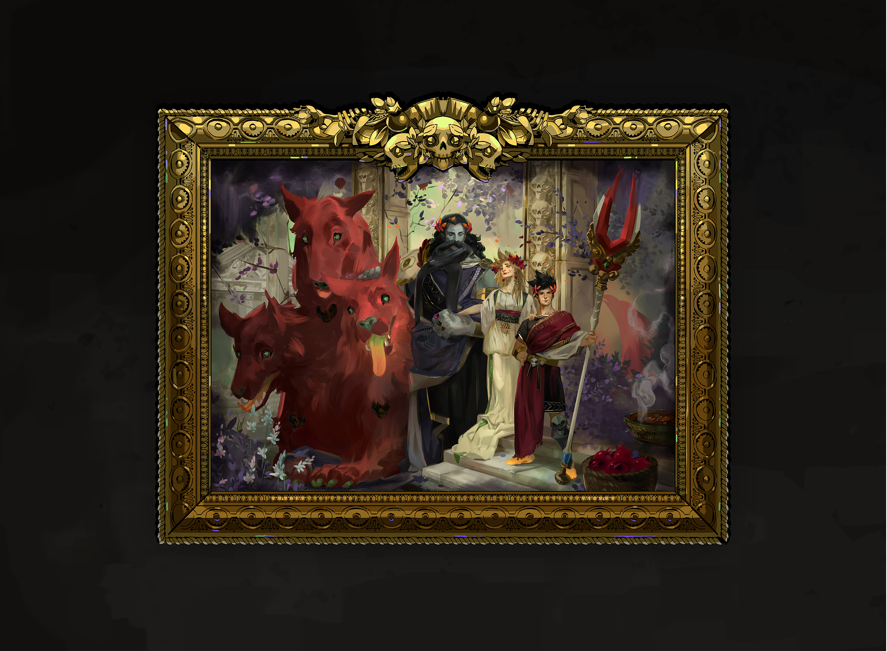
Phóng toĐiểm yếu cố hữu của thể loại Roguelite truyền thống là cốt truyện thường bị đứt gãy do người chơi chết liên tục và phải bắt đầu lại từ đầu. Hades đã tạo nên một cuộc cách mạng khi biến Cái chết (Death) thành nhịp cầu tự nhiên nhất để phát triển cốt truyện:
| Nhân Vật | Chân Dung Trích Xuất | Vai Trò & Chiều Sâu Tâm Lý Trong Kịch Bản |
|---|---|---|
| Zagreus | 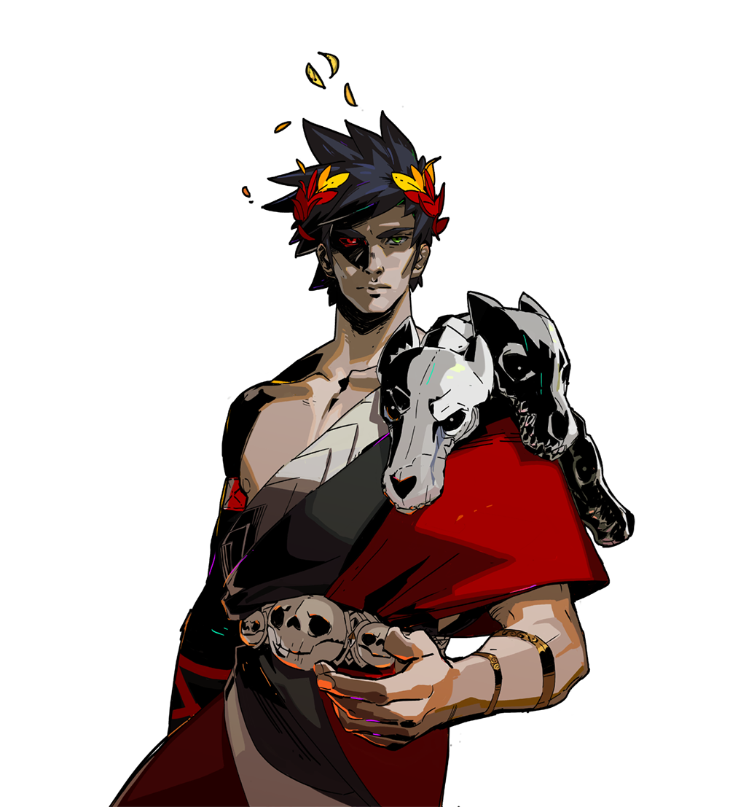 |
Hoàng tử Địa ngục, tính cách dí dỏm, kiên định. Động lực trốn chạy không phải để lật đổ cha mình mà là để tìm lại sự thật về người mẹ ruột Persephone. |
| Lord Hades | 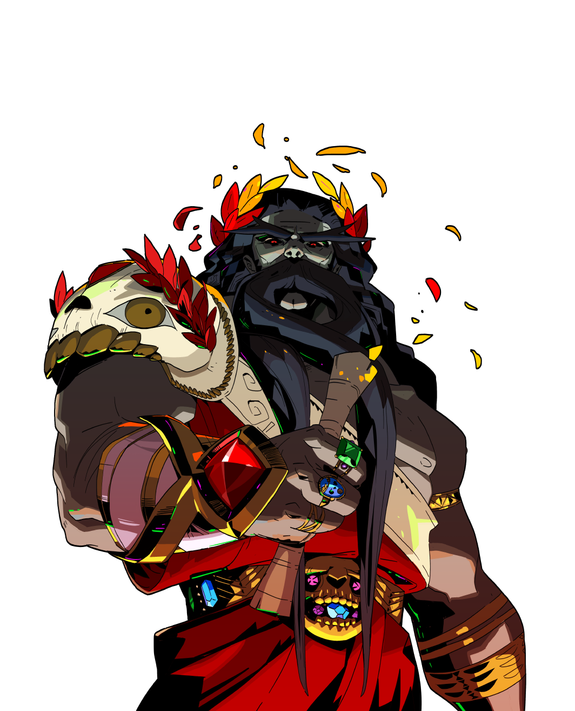 |
Chúa tể cai quản cõi chết. Bị ràng buộc bởi trách nhiệm hành chính vô tận, mang nặng vết thương lòng gia đình, luôn tỏ vẻ cay nghiệt nhưng ẩn chứa sự quan tâm thầm kín. |
| Nyx | 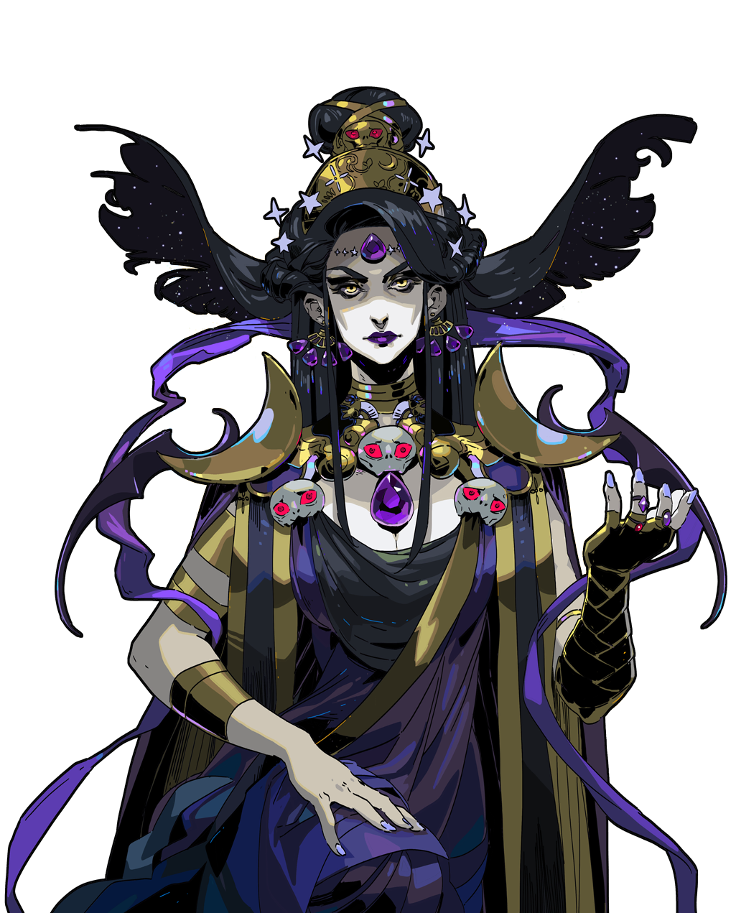 |
Hiện thân màn đêm (Night Incarnate), người mẹ nuôi dưỡng Zagreus. Cung cấp Gương bóng đêm (Mirror of Night) và bí mật móc nối với các vị thần Olympus để giúp Zagreus. |
| Persephone | 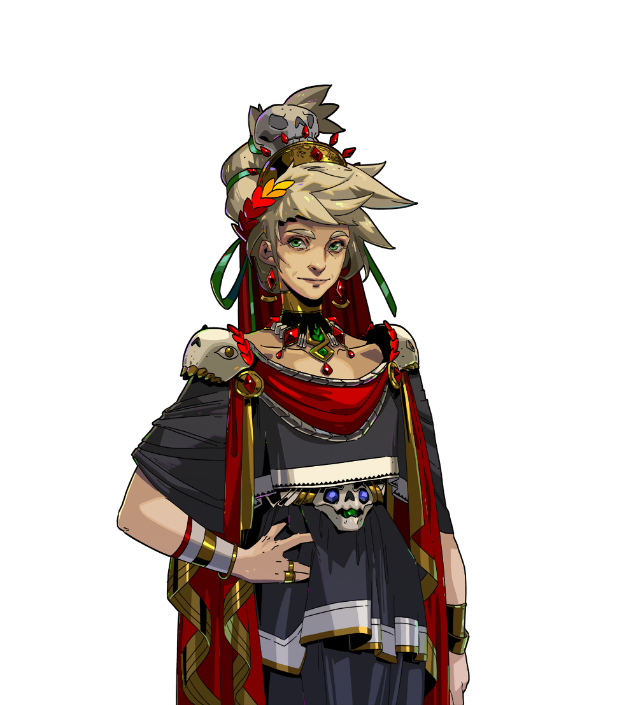 |
Nữ hoàng Địa ngục đang ẩn cư trên mặt đất. Điểm đến cuối cùng mở ra toàn bộ chân tướng về hòa ước giữa đỉnh Olympus và Vương quốc âm phủ. |
 Phóng to
Phóng to
5. CÂY TRẠNG THÁI NHIỆM VỤ & HỆ THỐNG TÌNH CẢM
Mã kịch bản trong NPCData.lua và Narrative.lua tiết lộ các máy trạng thái hữu hạn (FSM) quản lý các tuyến tình cảm và nhiệm vụ phụ:
5.1. Các Tuyến Cốt Truyện Bi Kịch Được Hàn Gắn
- Achilles & Patroclus:
- Achilles bị ràng buộc bởi bản hợp đồng vĩnh hằng bảo vệ cung điện. Zagreus phải lục tìm kho hồ sơ hành chính, thỉnh thị mẹ nuôi Nyx để tìm điều khoản giải phóng, cho phép Achilles dịch chuyển đến Elysium hội ngộ cùng người tri kỷ Patroclus.
- Orpheus & Eurydice:
- Nghệ sĩ cung đình Orpheus câm nín do nỗi đau đánh mất vợ khi quay đầu nhìn lại tại bờ cõi sinh tử. Zagreus giúp hủy bỏ bản giao kèo với Hades, mở đường cho Orpheus đến Asphodel gặp lại Eurydice. Hai người cùng hòa giọng khúc tình ca bất hủ "Good Riddance".
- Mẹ Đêm Nyx & Hư Vô Chaos:
- Hai thực thể nguyên thủy chia cách từ thuở hồng hoang. Zagreus chi tiêu 3142 Darkness qua Nhà thầu xây dựng để bắc cây cầu Eldritch Bridge kết nối hai chiều không gian.
- Hệ Thống Tình Cảm Đa Ái (Polyamory):
- Zagreus có thể theo đuổi cả Megaera (Nữ thần phục thù đầy kiêu hãnh) và Thanatos (Thần chết dịu dàng, sâu lắng) cùng lúc. Trò chơi không ép người chơi phải phản bội ai, mà thể hiện sự tôn trọng và thấu hiểu lẫn nhau giữa ba người. Riêng với Dusa, mối quan hệ phát triển thành tình bạn tri âm tri kỷ trong sáng và bền vững nhất.
5.2. Chân Dung 6 Trợ Thủ Thần Thánh (Chthonic Companions)
Khi người chơi tặng bình rượu thần Ambrosia đầu tiên cho các nhân vật gắn kết tri kỷ, họ sẽ ban tặng một chú thú cưng búp bê triệu hồi (Companion) có thể can thiệp trực tiếp vào chiến trận:
| Trợ Thủ | Tên Gọi | Người Ban Tặng | Chân Dung Gốc Codex | Hiệu Lực Kích Hoạt Chiến Đấu (Gọi 1-5 Lần/Run) |
|---|---|---|---|---|
| Battie | Cánh Dơi Phục Thù | Megaera | 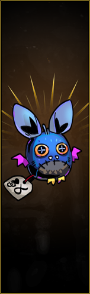 |
Oanh tạc một vệt roi sấm sét thẳng hàng gây 2500 sát thương diện rộng, hủy diệt tức khắc các phòng quái chật hẹp. |
| Mort | Chiếc Đầu Lâu Tử Thần | Thanatos | 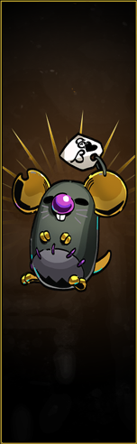 |
Triệu hồi lưỡi hái Thần Chết giáng một nhát chém kinh thiên động địa: 3500 sát thương (DPS đơn mục tiêu cao nhất game). |
| Rib | Khung Xương Tập Đánh | Skelly | 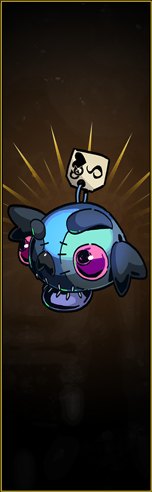 |
Triệu hồi Skelly đứng giữa phòng với 1000 HP, thu hút toàn bộ sự chú ý của quái vật và Boss để Zagreus rảnh tay xả đòn. |
| Shady | Tảng Đá Tri Âm | Sisyphus & Bouldy | 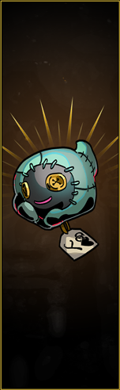 |
Tảng đá Bouldy rơi ầm từ trần nhà: Gây 1000 sát thương, đồng thời văng ra 30 HP máu, 50-100 Darkness và 30-60 Vàng! |
| Fidi | Rắn Xanh Đáng Yêu | Dusa | 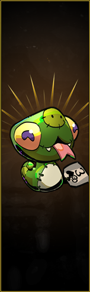 |
Dusa bay lượn trên không trong 30 giây, liên tục bắn tia hóa đá gây 70 sát thương/phát và làm chậm/hóa đá kẻ thù. |
| Antos | Tình Bạn Bất Tử | Achilles & Patroclus | 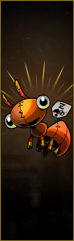 |
Achilles và Patroclus lần lượt lao qua chiến trường, gây 2 x 1500 sát thương (tổng 3000) vào 2 kẻ thù có HP cao nhất. |
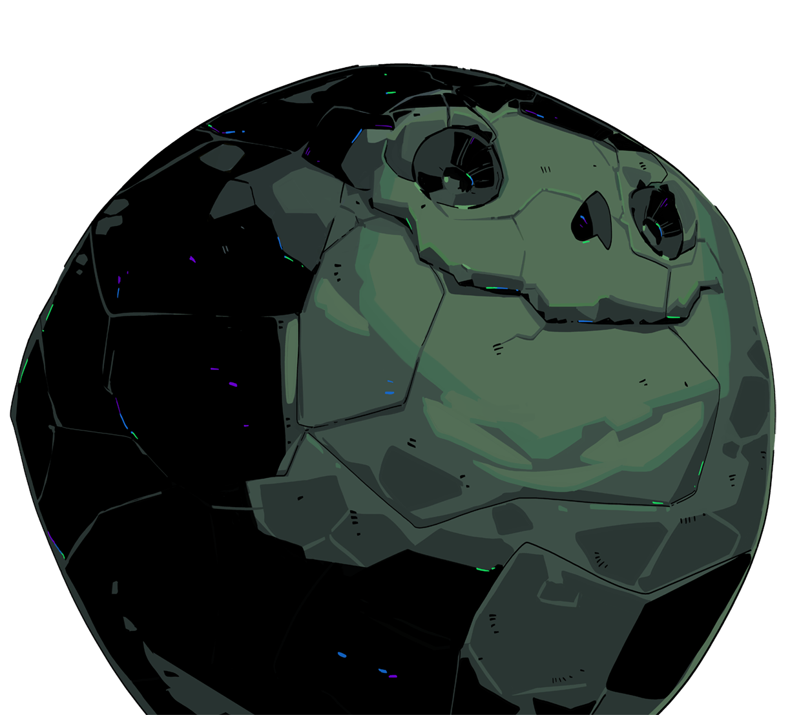
Phóng to6. HỆ THỐNG CHIẾN ĐẤU & CÔNG THỨC SÁT THƯƠNG CHUYÊN SÂU
Hệ thống chiến đấu trong Hades là một kiệt tác về mặt công nghệ lập trình và cảm giác điều khiển (Game Feel). Được vận hành bởi hai tệp kịch bản trung tâm Combat.lua (chứa logic sát thương, va chạm, hiệu ứng) và HeroData.lua (chứa thông số vật lý nhân vật), toàn bộ cơ chế ra đòn, né tránh và tính toán sát thương được xây dựng theo mô hình toán học đa tầng cực kỳ chuẩn xác.
6.1. Giải Mã Công Thức Sát Thương Đa Tầng Toàn Phần
Từ việc dịch ngược trực tiếp hàm CalculateDamageMultipliers (dài hơn 15,900 ký tự) và CalculateDamageAdditions trong Combat.lua:
$$\text{Final Damage} = \Big[ (\text{Base Weapon Damage} + \text{Flat Additions}) \times \big(1 + \sum \text{Additive Multipliers}\big) \times \prod \text{Multiplicative Multipliers} \Big] \times \text{Crit Multiplier} \times \prod \text{Reduction Multipliers}$$
1. Sát Thương Gốc (Base Weapon Damage) & Chỉ Số Cộng Thẳng (Flat Additions)
- Base Weapon Damage: Mỗi loại vũ khí sở hữu một chỉ số sát thương gốc riêng biệt cho từng đòn:
- Stygian Blade: Đòn chém 1 = 20, Chém 2 = 25, Chém 3 = 30, Đòn Đặc biệt (Special Nova) = 50.
- Coronacht Bow: Bắn thường chưa gồng = 20, Gồng tối đa = 50, Đòn Bắn Hoàn Hảo (Power Shot) = 70, Bắn chùm Special = 10 x 9 mũi tên.
- Aegis Shield: Đập khiên = 15, Special ném khiên = 15, Húc khiên Bull Rush = 20 - 40.
- Flat Additions (
CalculateDamageAdditions): Các giá trị cộng trực tiếp vào sát thương gốc trước khi áp dụng bất kỳ hệ số nhân phần trăm nào:- Nâng cấp Búa Daedalus Hoarding Slash của kiếm: $$\text{DamageAddition} = \text{CurrentRun.Money} \times 0.05$$ (Nếu Zagreus đang giữ 1,000 vàng Obol, mỗi cú chém kiếm được cộng thêm thẳng +50 sát thương gốc, biến đòn chém 20 thành 70 trước khi nhân %!)
- Đòn đập khiên Sudden Rush hoặc các hiệu ứng cộng dồn chỉ số phẳng từ Chaos.
2. Phân Biệt Sát Thương Cộng Dồn (Additive) vs Nhân Dồn (Multiplicative)
Trong mã nguồn Combat.lua, một cấu trúc hàm nội suy quan trọng quy định cách các bùa lợi tăng sát thương tương tác với nhau:
local addDamageMultiplier = function( data, multiplier )
if multiplier >= 1.0 then
if data.Multiplicative then
damageReductionMultipliers = damageReductionMultipliers * multiplier
else
damageMultipliers = damageMultipliers + multiplier - 1
end
else
damageReductionMultipliers = damageReductionMultipliers * multiplier
end
end
- Nhóm Cộng Dồn Tuyến Tính (Additive Multipliers): Áp dụng cho hầu hết các Chúc phúc của thần linh, Búa Daedalus, chúc phúc Chaos và Gương bóng đêm:
- Ví dụ: Zagreus có Heartbreak Strike của Aphrodite ($+100%$ sát thương), búa Daedalus Double Edge ($+100%$ cho Dash-Strike), và Shadow Presence trên Gương bóng đêm ($+50%$ khi Backstab).
- Tổng hệ số nhân là: $1 + (1.00) + (1.00) + (0.50) = 3.50$ (tức $+250%$ sát thương), chứ không phải $2.0 \times 2.0 \times 1.5 = 6.0$.
- Nhóm Nhân Dồn Độc Lập (Multiplicative Multipliers -
data.Multiplicative == true): Chỉ một số ít cơ chế đặc biệt sở hữu đặc quyền nhân trực tiếp lên toàn bộ tổng sát thương:- Boiling Blood (Gương bóng đêm): Khi găm viên Huyết Thạch (Bloodstone) vào kẻ địch, Zagreus gây thêm $\times 1.5$ ($+50%$) sát thương nhân dồn độc lập từ mọi đòn đánh!
- Privileged Status (Gương bóng đêm): Khi kẻ địch chịu cùng lúc 2 hiệu ứng nguyền rủa (Curse), toàn bộ sát thương nhận vào nhân thêm $\times 1.4$ ($+40%$) nhân dồn độc lập!
- Ý nghĩa chiến thuật đỉnh cao: Nếu kích hoạt đồng thời cả Boiling Blood và Privileged Status, lượng sát thương của Zagreus được nhân thêm tới: $$1.5 \times 1.4 = 2.10 \quad (+110% \text{ Sát thương tổng lực!})$$
3. Đòn Chí Mạng (Critical Hits) & Công Thức Giảm Trừ Sát Thương
- Hệ số Chí Mạng (Crit Multiplier): Mọi đòn chí mạng trong Hades nhân cứng $\times 300%$ (3.0) sát thương cuối cùng. Nếu có chúc phúc Clean Kill của Artemis, con số này tăng lên $\times 350%$!
- Hệ số Giảm Trừ Sát Thương (Damage Reduction Multipliers):
- Khi
multiplier < 1.0(giảm sát thương người chơi nhận vào hoặc quái vật có giáp), công thức luôn luôn nhân dồn: $$\text{DamageTaken} = \prod (1 - R_i)$$ - Ví dụ: Zagreus sở hữu chúc phúc Different League của Dionysus (giảm $15%$ sát thương cận chiến) và Tín vật Myrmidon Bracer của Achilles (giảm $30%$ sát thương từ phía trước). Sát thương nhận vào sẽ là: $$(1 - 0.15) \times (1 - 0.30) = 0.85 \times 0.70 = 0.595 \quad (\text{Giảm } 40.5%, \text{ không bao giờ cộng thành } 45%!)$$
- Điều này giải thích tại sao trong Hades người chơi không bao giờ có thể xây dựng được một bộ trang bị miễn nhiễm hoàn toàn $100%$ sát thương.
- Khi
6.2. Cơ Học Lướt Lách (Dash Physics), Hủy Hoạt Ảnh & Khung Bất Tử (i-Frames)
Lướt lách (Dash) là công cụ sinh tồn quan trọng nhất của trò chơi, được cấu hình chi tiết trong HeroData.lua:
RushWeaponMaxRange = 400,
InvulnerableFrameThreshold = 0.25,
InvulnerableFrameDuration = 1.3,
InvulnerableFrameMinDamage = 10,
InvulnerableFrameCumulativeDamageDuration = 0.6,
 Phóng to
Phóng to
- Khung Bất Tử Chuẩn (Standard i-Frames): Mỗi cú Dash cơ bản cung cấp 15 khung hình bất tử (0.25 giây ở 60 FPS). Trong cửa sổ này, Zagreus hoàn toàn miễn nhiễm với mọi nguồn sát thương (kể cả bẫy gai, nham thạch và đường đạn laze).
- Cơ Chế Hủy Hoạt Ảnh (Animation Cancel):
- Zagreus có thể hủy đòn đánh thường đang vung dở bằng một cú Dash để thoát ly khẩn cấp.
- Ngược lại, nhấn nút Tấn Công trong lúc đang Dash sẽ hủy bỏ giai đoạn hồi phục động tác (Recovery frames) của cú Dash để tung ra cú Dash-Strike ngay lập tức.
- Dash-Strike vs Attack Thường:
- Dash-Strike: Tốc độ xuất chiêu nhanh hơn, tầm quét rộng hơn, nhưng thường có sát thương gốc thấp hơn một chút so với đòn chém thường và KHÔNG kích hoạt được một số búa Daedalus dành riêng cho Attack thường.
- Bảo Hiểm Chống Đột Tử (Anti-One-Shot Protection):
- Tham số
InvulnerableFrameCumulativeDamageDuration = 0.6vàInvulnerableFrameDuration = 1.3: Nếu Zagreus nhận sát thương dồn dập vượt quá ngưỡng trong vòng 0.6 giây, game sẽ tự động ban tặng 1.3 giây bất tử tuyệt đối, ngăn không cho các đợt bắn chùm của quái vật hạ gục người chơi ngay tức khắc.
- Tham số
6.3. Cơ Chế Khựng Đòn (Hit-Stop / Simulation Slow) & Rung Chấn Màn Hình (Screen Shake)
Cảm giác đánh đấm "cực đã" (Punchy Combat) của Hades được tạo ra bởi một kỹ thuật bí mật trong mã nguồn: Hệ số làm chậm mô phỏng (HitSimSlowParameters).
Khi một đòn tấn công uy lực đánh trúng kẻ địch (ví dụ: cú chém thứ ba của Kiếm Stygian, cú húc khiên Aegis, hoặc cú quét giáo của Hades), engine gọi hàm làm chậm thời gian:
HitSimSlowParameters =
{
{ ScreenPreWait = 0.02, Fraction = 0.01, LerpTime = 0 },
{ ScreenPreWait = 0.15, Fraction = 0.30, LerpTime = 0.1 },
{ ScreenPreWait = 0.10, Fraction = 1.00, LerpTime = 0 },
}
- Giải mã tham số:
ScreenPreWait = 0.02, Fraction = 0.01: Trong 20 mili-giây đầu tiên sau khi chạm đòn, toàn bộ thế giới trò chơi bị đóng băng xuống 1% tốc độ bình thường (gần như đứng yên hoàn toàn).Fraction = 0.30: Trong 150 mili-giây tiếp theo, tốc độ phục hồi lên 30%.Fraction = 1.00: Sau 100 mili-giây nữa, trò chơi trở lại tốc độ 100%.
- Kết hợp với hiệu ứng rung lắc màn hình
HitScreenshake = { Distance = 10, Speed = 1000, Duration = 0.2 }, não bộ người chơi cảm nhận được một trọng lượng vật lý khổng lồ như thể lưỡi kiếm vừa chém xuyên qua một khối thép đặc, tạo nên cảm giác thỏa mãn tột cùng.
6.4. Vật Lý Đẩy Lùi (Knockback) & Va Chạm Góc Tường (Wall Slam)
Khi kẻ địch chịu tác động của lực đẩy lùi (Knockback) từ Khiên Aegis, Cung Coronacht hoặc Chúc phúc của Thần Biển Poseidon, engine sẽ tính toán quỹ đạo bay của mục tiêu. Nếu mục tiêu va đập vào chướng ngại vật cố định (tường đá, cột trụ Hy Lạp, bẫy chông), cơ chế Va Chạm Góc Tường (Wall Slam) sẽ được kích hoạt:
$$\text{Wall Slam Damage} = \text{Base Knockback Speed} \times \text{Victim Mass} + \text{Wall Impact Bonus}$$
- Sức Mạnh Hủy Diệt Của Poseidon:
- Chúc phúc Typhoon's Fury: Tăng thêm tới $+200%$ sát thương khi quái vật bị đập vào tường.
- Chúc phúc Breaking Wave: Mỗi khi quái vật va vào tường, tạo ra một vụ nổ sóng thần thứ cấp gây thêm 100-200 sát thương diện rộng lên các kẻ địch xung quanh.
- Trong các căn phòng hẹp ở Tartarus hoặc Đền Styx, combo đẩy tường của Poseidon có thể quét sạch toàn bộ đàn quái vật chỉ sau 1-2 cú húc khiên!
6.5. Ma Trận 8 Lời Nguyền Trạng Thái (Curse Status Effects) & Privileged Status (+40%)
Trạng thái bất lợi (Curse) là chìa khóa để tối đa hóa lượng sát thương trong giai đoạn giữa và cuối game:
| Thần Bảo Trợ | Tên Lời Nguyền (Curse) | Cơ Chế Hoạt Động Cụ Thể | Giới Hạn Cộng Dồn (Stack Limit) | Cách Kích Hoạt Tối Ưu |
|---|---|---|---|---|
| Zeus | Jolt (Giật Điện) | Kẻ địch bị nhiễm điện; khi chúng chuẩn bị tung đòn tấn công, một tia sét tự giật vào người chúng gây 60-150 sát thương. | 1 Tầng (Làm mới thời gian khi đánh tiếp) | Cực mạnh khi đối đầu với các boss có tần suất ra đòn nhanh (Megaera, Asterius). |
| Poseidon | Rupture (Vỡ Mạch) | Kẻ địch bị vỡ mạch máu; liên tục mất máu theo thời gian mỗi khi di chuyển trong 3 giây. | 1 Tầng (Rút máu theo khoảng cách di chuyển) | Kết hợp hoàn hảo với các đòn đẩy lùi liên tục của Poseidon. |
| Athena | Exposed (Phơi Nhiễm) | Kẻ địch bị phản xạ đòn để lộ điểm yếu; nhận thêm $+50%$ sát thương đâm lén sau lưng (Backstab). | 1 Tầng (Kéo dài 5 giây) | Kết hợp tuyệt hảo với kỹ năng Shadow Presence trên Gương bóng đêm. |
| Aphrodite | Weak (Suy Yếu) | Kẻ địch bị mê hoặc; giảm $-30%$ sát thương gây ra trong tối thiểu 3 giây. | 1 Tầng (Kéo dài lâu nhất trong các curse) | Chúc phúc phòng thủ tốt nhất game, giảm tải áp lực né đòn cho người chơi. |
| Artemis | Hunter's Mark (Đánh Dấu) | Sau khi nhận sát thương chí mạng, kẻ địch kế bên bị đánh dấu; tăng $+30%$ tỉ lệ bị chí mạng. | 1 Tầng (Nhảy mục tiêu liên tục khi quái chết) | Tạo ra chuỗi nổ chí mạng dây chuyền quét sạch phòng quái đông đúc. |
| Ares | Doom (Tuyệt Mệnh) | Một lưỡi kiếm bóng tối lơ lửng trên đầu; sau 1.1 giây trễ, lưỡi kiếm rơi xuống nổ từ 60 đến 250+ sát thương. | 1 Tầng (Muốn cộng dồn phải có chúc phúc Dire Misfortune) | Thích hợp cho lối đánh "đánh một đòn rồi bỏ chạy" (Hit and Run). |
| Dionysus | Hangover (Say Xỉn) | Kẻ địch bị nhiễm độc rượu; mất máu liên tục mỗi 0.5 giây trong 4 giây. | Tối đa 5 Tầng (Tăng lên 8 tầng với chúc phúc Low Tolerance) | Vũ khí đánh nhanh (Súng Rail, Nắm đấm Malphon) có thể tích đủ 5 tầng trong 1 giây! |
| Demeter | Chill (Lạnh Giá) | Kẻ địch bị phủ băng giá; mỗi tầng làm chậm $4%$ tốc độ di chuyển và tấn công. | Tối đa 10 Tầng ($= 40%$ làm chậm tối đa) | Khi đạt 10 tầng, chúc phúc Arctic Blast kích hoạt vụ nổ băng gây 80-160 sát thương và xóa sạch tầng. |
Quy Tắc Kích Hoạt Privileged Status (+40% Sát Thương Vĩnh Viễn): Chỉ cần kết hợp 2 lời nguyền dễ duy trì nhất (ví dụ: Weak của Aphrodite trên đòn Attack và Doom của Ares trên Special, hoặc Chill của Demeter trên Dash), toàn bộ sát thương Zagreus gây ra lên mục tiêu sẽ tự động tăng thêm $+40%$ nhân dồn độc lập! Đây là cột mốc phân biệt giữa một người chơi mới và một cao thủ build đồ trong Hades.
6.6. Vòng Đời Hoạt Ảnh (Animation Lifecycle), Phản Xạ Đòn & Hỗ Trợ Nhắm Bắn
1. Vòng Đời Hoạt Ảnh Đòn Đánh (Startup, Active, Recovery Frames)
Mọi đòn tấn công trong Hades đều được cấu hình theo 3 giai đoạn hoạt ảnh nghiêm ngặt:
- Startup Frames (Khung Chuẩn Bị): Giai đoạn vũ khí vung lên trước khi tạo ra hitbox. Người chơi có thể bị ngắt đòn nếu bị quái vật đánh trúng trong giai đoạn này (trừ khi có giáp ảo hoặc đòn gồng có cờ
BlockInterrupt = true). - Active Frames (Khung Gây Sát Thương): Giai đoạn hitbox va chạm tồn tại trên không gian, quét qua kẻ địch để kích hoạt hàm
Damage(victim, triggerArgs). - Recovery Frames (Khung Hồi Phục): Giai đoạn vũ khí thu về tư thế chuẩn bị. Trong giai đoạn này, Zagreus hoàn toàn bất động nếu không chủ động thực hiện Hủy Hoạt Ảnh (Animation Cancel) bằng một cú Dash khẩn cấp!
2. Cơ Chế Phản Xạ Đòn Của Thần Athena (Deflect & Reflect Physics)
Khi Zagreus sở hữu chúc phúc của Athena, các đòn đánh được gắn cờ Deflect = true. Khi một đường đạn (Projectile) của kẻ địch chạm vào hitbox phản xạ:
- Đảo Ngược Phe Phái (Faction Swap): Engine C++ lập tức chuyển thuộc tính phe phái của viên đạn từ
EnemysangPlayer. Viên đạn không còn khả năng gây hại cho Zagreus mà có thể gây sát thương lên chính quái vật! - Đảo Ngược Vector Vận Tốc: Vận tốc viên đạn bị nhân ngược $180^\circ$ quay trở lại hướng kẻ bắn.
- Khuếch Đại Sát Thương Phản Đòn (
ProjectileDeflectedMultiplier):Sát thương viên đạn phản xạ được nhân thêm từ $+50%$ đến $+100%$, khiến các đòn bắn tỉa của phù thủy Wretch Caster hoặc cung thủ Elysium tự tiêu diệt chính bản thân chúng trong tích tắc.LUA 5.2 SCRIPTif modifierData.ProjectileDeflectedMultiplier and triggerArgs.ProjectileDeflected then addDamageMultiplier( modifierData, modifierData.ProjectileDeflectedMultiplier ) PlaySound({ Name = "/Leftovers/SFX/PlayerProjectileDeflect", Id = CurrentRun.Hero.ObjectId }) end
3. Hệ Thống Hỗ Trợ Nhắm Bắn: Tay Cầm Gamepad vs Chuột Bàn Phím
Engine The Forge tích hợp hai hệ thống điều khiển riêng biệt:
- Trên Tay Cầm (Gamepad - Auto Lock-on):
- Tham số:
AutoLockRange = 600pixel,AutoLockArc = 60°. - Khi gạt cần analog di chuyển hoặc tấn công, hệ thống tự động "hút" (Snap) góc bắn vào kẻ địch gần nhất trong hình nón $60^\circ$ phía trước mặt, giúp game thủ console ra đòn với độ chính xác tuyệt đối mà không cần căn chỉnh tỉ mỉ.
- Tham số:
- Trên Chuột Bàn Phím (Free Aiming):
- Tính năng Auto Lock bị vô hiệu hóa; góc tấn công bám sát $100%$ theo con trỏ chuột.
- Cho phép người chơi thực hiện các kỹ thuật đỉnh cao: Bắn Đón Đầu (Lead Shots), ném lựu đạn Súng Rail vào điểm mù sau cột đá, hoặc phóng ngọc Cast qua khe hẹp mà không bị hệ thống tự động kéo lệch hướng.
7. KHO VŨ KHÍ INFERNAL ARMS & 24 BIẾN THỂ
| Biểu Tượng | Tên Vũ Khí & Tên Thần | Các Biến Thể (Aspects) | Phân Tích Cơ Chế Đặc Trưng |
|---|---|---|---|
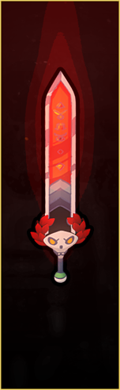 |
Stygius (Stygian Blade) |
• Zagreus • Nemesis • Poseidon • Arthur (Ẩn) |
Cận chiến cân bằng. Aspect of Arthur mở rộng lượng máu tối đa (+50 HP), tạo Thánh địa Hallowed Ground làm chậm đạn đạo địch 80% và chuỗi combo chém cực nặng (200-400 base dmg). |
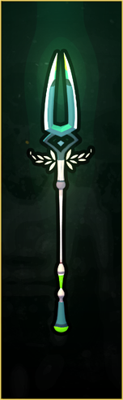 |
Varatha (Eternal Spear) |
• Zagreus • Achilles • Hades • Guan Yu (Ẩn) |
Tầm đánh trung & Kiểm soát không gian. Aspect of Achilles cho phép phóng giáo và lướt biến ảnh đến vị trí giáo (Raging Rush), gia tăng +150% sát thương cho 4 đòn đánh/phép Cast kế tiếp. |
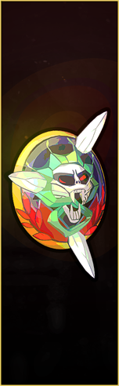 |
Aegis (Shield of Chaos) |
• Zagreus • Chaos • Zeus • Beowulf (Ẩn) |
Phòng thủ phản công. Khả năng chặn (Block) 100% sát thương trước mặt khi gồng Bull Rush. Aspect of Beowulf biến khiên thành cỗ xe tăng bọc thép, nạp trực tiếp ngọc Cast vào đòn ủi rồng Dragon Rush. |
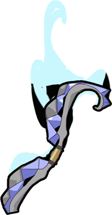 |
Coronacht (Heart-Seeker Bow) |
• Zagreus • Chiron • Hera • Rama (Ẩn) |
Tấn công tầm xa & Dồn sát thương. Aspect of Chiron đánh dấu kẻ thù bằng đòn thường, sau đó toàn bộ chùm tên của đòn Special sẽ tự động đổi hướng truy đuổi mục tiêu với độ chính xác tuyệt đối. |
7.3. Phân Tích Chuyên Sâu 6 Biến Thể Ẩn Thần Thoại (Hidden Aspects)
Biến thể thứ 4 (Hidden Aspect) của mỗi loại vũ khí đại diện cho sức mạnh của một anh hùng hoặc vị thần trong các nền thần thoại khác ngoài Hy Lạp (Anh Quốc, Trung Hoa, Bắc Âu, Lưỡng Hà, Ấn Độ, Kito giáo).
| Vũ Khí | Biến Thể Ẩn | Nhân Vật Nắm Giữ Thần Chú | Câu Thần Chú Đánh Thức (Awakening Phrase) | Kỹ Năng Độc Bản Trong Mã Nguồn |
|---|---|---|---|---|
| Kiếm Stygius | Aspect of Arthur (Vua Arthur) | Nyx (Nữ thần Đêm) | "I see your pride in the stone that yields to no mortal hand." | SwordConsecrationTrait: Tạo vùng Thánh Địa Hallowed Ground làm chậm đạn địch 80%, giảm 40% sát thương nhận vào, tăng +50 HP tối đa, sát thương chém kiếm tăng lên 60 - 80 - 200! |
| Thương Varatha | Aspect of Guan Yu (Quan Vũ) | Achilles (Chiến binh) | "I see you in the crimson eyes of the titan-slayer." | SpearGuanYu: Thanh Long Yển Nguyệt Đao; đòn gồng xoay Spin phóng ra lưỡi đao rồng hút máu hồi phục cho Zagreus (1-2 HP mỗi hit); bù lại lượng máu tối đa bị giảm -50%. |
| Khiên Aegis | Aspect of Beowulf (Beowulf) | Chaos (Tiền nguyên) | "I see you stand against the serpent's fire." | ShieldLoadAmmoTrait: Khiên Rồng Naegling's Board; Zagreus nhồi ngọc Cast trực tiếp vào khiên, đòn húc Bull Rush hóa thành Dragon Rush kích nổ toàn bộ ngọc cast gây sát thương diện rộng cực đại. |
| Cung Coronacht | Aspect of Rama (Anh hùng Rama) | Artemis (Thần Săn bắn) | "I see you in the arms of the celestial archer." | BowBondTrait: Cung Thần Celestial Sharanga; đòn Special đánh dấu kẻ địch bằng lời nguyền Shared Suffering; khi Zagreus bắn đòn Attack vào bất kỳ mục tiêu nào, 60% lượng sát thương đó tự động dội sang tất cả quái vật bị đánh dấu! |
| Nắm đấm Malphon | Aspect of Gilgamesh (Vua Gilgamesh) | Asterius (Bò tót Minotaur) | "I see you among the wild beasts and the kings." | FistDetonateTrait: Vuốt Quái Thú Claws of Enkidu; đòn Dash-Upper gây hiệu ứng nguyền rủa Maim — mục tiêu nhận thêm $+25%$ sát thương, sau 4 giây tự phát nổ 400 sát thương diện rộng; tăng thêm 2 lần Dash liên tiếp! |
| Súng Exagryph | Aspect of Lucifer (Thiên Thần Sa Ngã) | Zeus (Chúa tể Sấm sét) | "I see your pride fall from the heavens like morning star." | GunLoadedGrenadeTrait: Khẩu súng Igneus Eden; đòn Attack bắn ra tia laze plasma thiêu đốt liên tục tăng dần sát thương; đòn Special thả các quả cầu lửa Hellfire phát nổ diện rộng 100 dmg khi bị bắn trúng. |
- Điều Kiện Lập Trình Để Mở Khóa Hidden Aspects:
- Người chơi phải đầu tư tối thiểu 5 Máu Titan (Titan Blood) vào các biến thể không phải dạng gốc của loại vũ khí đó.
- Mở khóa Bách khoa toàn thư Codex của Achilles.
- Mở khóa biến thể ẩn của Cây Thương Guan Yu trước tiên (Guan Yu là chìa khóa gốc mở đường cho 5 biến thể còn lại).
- Trò chuyện với NPC nắm giữ câu thần chú tương ứng cho đến khi xuất hiện đoạn thoại đặc biệt có cờ
RequiredTextLines.
7.3. Bảng Chân Dung Trực Quan 6 Biến Thể Ẩn Thần Thoại (Hidden Aspects)
Dưới đây là hình ảnh trích xuất trực tiếp từ Codex lưu trữ của trò chơi cho 6 dạng thức thức tỉnh tối thượng:
| Vũ Khí | Biến Thể Ẩn (Hidden Aspect) | Chân Dung Codex Gốc | Thần Chú Đánh Thức & Cơ Chế Đặc Trưng |
|---|---|---|---|
| Kiếm Stygius | Aspect of Arthur | 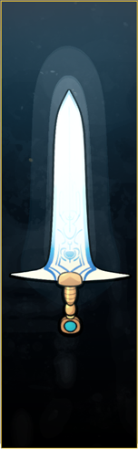 |
"I see your pride downfall." (Nyx) • Tạo pháp trận Hallow làm chậm đạn 80%, +50 Max HP. |
| Thương Varatha | Aspect of Guan Yu | 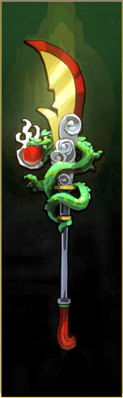 |
"I see you in the crimson eye." (Achilles) • Xoay lốc xoáy hút máu hồi phục HP, bị trừ -70% Máu gốc. |
| Khiên Aegis | Aspect of Beowulf | 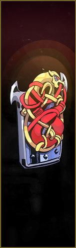 |
"I see you withstand the dragon." (Chaos) • Cơ chế nạp Cast Dragon Rush tạo vụ nổ diện rộng hủy diệt. |
| Cung Coronacht | Aspect of Rama | 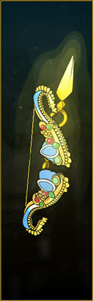 |
"I see you in heaven's bow." (Artemis) • Găm Lời nguyền Chia sẻ (Shared Suffering) lan 60% sát thương đòn bắn. |
| Nắm Đấm Malphon | Aspect of Gilgamesh | 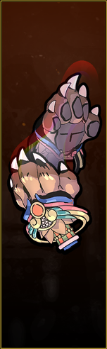 |
"I see you embrace wild strength." (Asterius) • Dậm chân xé xác Maim (+400 sát thương sau 4 giây, lướt 3 lần liên tiếp). |
| Súng Exagryph | Aspect of Lucifer | 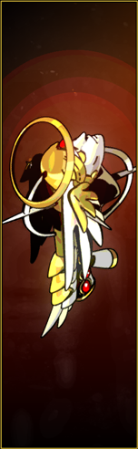 |
"I see your pride descent." (Zeus) • Bắn tia laze địa ngục liên tục & Thả bom địa lôi Hellfire gây nổ dây chuyền. |
Bảng Chân Dung Các Biến Thể Tiêu Biểu Khác Được Ưa Chuộng:
| Aspect of Nemesis (Kiếm) | Aspect of Poseidon (Kiếm) | Aspect of Zeus (Khiên) | Aspect of Chiron (Cung) | Aspect of Eris (Súng) | Aspect of Talos (Nắm Đấm) |
|---|---|---|---|---|---|
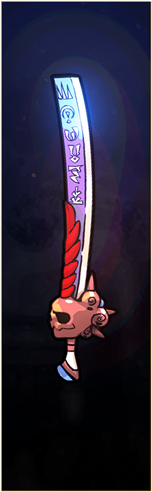 |
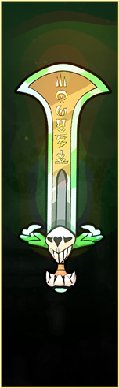 |
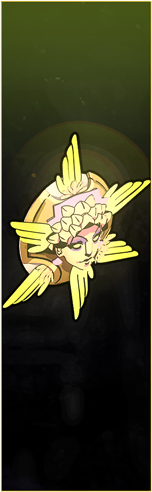 |
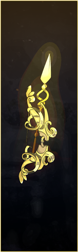 |
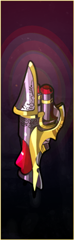 |
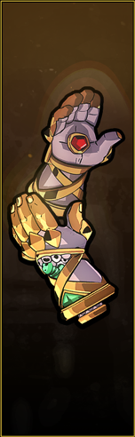 |
| +30% Crit sau Special | Kích văng Cast khỏi địch | Khiên bay phóng sét tự động | 8 Mũi tên tự tìm mục tiêu | Đứng trong khói bom: +75% Dmg | Kéo kẻ địch từ xa lại gần |
8. GIẢI MÃ TOÀN BỘ 60+ NÂNG CẤP BÚA RÈN DAEDALUS
Búa rèn Daedalus (Daedalus Hammer) không thuộc hệ thống chúc phúc của các vị thần mà thay đổi tận gốc rễ cơ chế vật lý của từng vũ khí. Trích xuất trực tiếp từ bảng WeaponUpgrade trong LootData.lua:
8.1. Bảng Chi Tiết Nâng Cấp Daedalus Hammer Theo Từng Vũ Khí
1. Thanh Kiếm Cổ Stygius (Stygian Blade)
- Flurry Slash (
SwordBlinkTrait): Giữ nút đánh để chém liên tục với tốc độ cao (+25% tốc đánh). - World Splitter (
SwordTwoComboTrait): Biến chuỗi combo 3 đòn thành 1 cú bổ kiếm duy nhất gây 90 base damage (không tương thích với Flurry Slash hoặc Aspect of Arthur). - Double Nova (
SwordHeavySecondStrikeTrait): Đòn Special nổ 2 lần liên tiếp nhưng không đẩy lùi kẻ địch. - Super Nova (
SwordSecondaryAreaDamageTrait): Tăng +20% sát thương và +40% diện tích vụ nổ của đòn Special. - Double Edge (
SwordDoubleDashAttackTrait): Đòn Dash-Strike chém 2 lần liên tiếp và tăng +20% sát thương. - Hoarding Slash (
SwordGoldDamageTrait): Đòn đánh cơ bản được cộng thêm sát thương bằng 5% tổng số tiền vàng hiện có. - Cursed Slash (
SwordCursedLifeStealTrait): Mỗi nhát chém trúng địch hồi phục 2 HP, nhưng giảm ngay lập tức 60% lượng Máu Tối Đa. - Cruel Thrust (
SwordCriticalTrait): Đòn đâm thứ 3 trong chuỗi combo gây thêm +200% sát thương và tăng cơ hội chí mạng. - Breaching Slash (
SwordHealthBufferDamageTrait): Đòn đánh gây thêm +300% sát thương lên Giáp ảo (HealthBuffer). - Piercing Wave (
SwordThrustWaveTrait): Đòn đánh phóng ra luồng sóng kiếm tầm xa gây 30 sát thương xuyên thấu.
2. Cây Cung Thần Coronacht (Heart-Seeker Bow)
- Twin Shot (
BowDoubleShotTrait): Bắn 2 mũi tên song song nhưng giảm tầm bắn đi 20%. - Triple Shot (
BowTripleShotTrait): Bắn 3 mũi tên hình quạt cùng lúc. - Flurry Shot (
BowTapFireTrait): Giữ nút bắn để xả tên liên tục không cần căn lực kéo cung. - Point-Blank Shot (
BowCloseAttackTrait): Bắn ở cự ly gần gây thêm +150% sát thương. - Explosive Shot (
BowSlowChargeDamageTrait): Mũi tên tích tụ lực chậm hơn nhưng phát nổ diện rộng gây 300% sát thương. - Perfect Shot (
BowPowerShotTrait): Đòn bắn hoàn hảo (Power Shot) căn đúng vạch sáng tăng thêm +100% sát thương và thời gian căn lực dễ hơn. - Relentless Barrage (
BowSecondaryBarrageTrait): Đòn Special bắn thêm +4 mũi tên (tăng mạnh dồn stack độc Dionysus). - Charged Volley (
BowSecondaryFocusedFireTrait): Special có thể gồng lực để bắn chùm tên thu hẹp với sát thương tăng dần. - Chain Shot (
BowChainShotTrait): Mũi tên nảy bật giữa 3 kẻ địch gần nhau, mỗi lần nảy tăng thêm sát thương.
3. Khẩu Thần Công Exagryph (Adamant Rail)
- Rocket Bomb (
GunExplodingSecondaryTrait): Biến đạn lựu pháo cầu vồng thành Tên Lửa Siêu Thanh bay thẳng, gây 80 base damage. - Cluster Bomb (
GunGrenadeClusterTrait): Đòn Special bắn ra một lúc 5 quả bom chùm (sát thương mỗi quả -30%).[!TIP] Sự kết hợp huyền thoại Rocket Bomb + Cluster Bomb: Biến khẩu súng thành bệ phóng 5 quả tên lửa cùng lúc, tiêu diệt bất kỳ con trùm nào chỉ sau 2-3 phát ngắm bắn tầm gần!
- Hazard Bomb (
GunSlowGrenade): Đạn lựu pháo biến thành quả bom hạt nhân khổng lồ gây +300% sát thương, nhưng vùng bức xạ gây sát thương lên cả Zagreus. - Delta Chamber (
GunInfiniteAmmoTrait): Băng đạn trở nên Vô Tận, đòn bắn biến thành chùm 3 tia đạn 3 hướng, không bao giờ phải nạp đạn (Reload). - Flurry Fire (
GunMinigunTrait): Tăng thêm +6 viên đạn vào băng đạn và tăng tốc độ xả đạn lên cực đại. - Spread Fire (
GunShotgunTrait): Biến khẩu súng trường thành súng săn Shotgun bắn chùm đạn xòe cực mạnh ở cự ly gần.
9. HỆ THỐNG THẦN LINH OLYMPUS & PHỐI HỢP SỨC MẠNH
10. BẢNG MA TRẬN HOÀN CHỈNH 28 CHÚC PHÚC KÉP
Chúc phúc kép (Duo Boons) là đỉnh cao sức mạnh phối hợp giữa 2 vị thần Olympus. Dưới đây là bảng đối soát trọn vẹn 28 Duo Boons được trích xuất trực tiếp từ mã nguồn LootData.lua:
| Tên Duo Boon | Cặp Thần | Tên Mã Lệnh (Internal Trait) | Điều Kiện Tiền Đề Cốt Lõi (Prerequisites) | Phân Tích Hiệu Ứng Cơ Chế |
|---|---|---|---|---|
| Merciful End | Athena + Ares | TriggerCurseTrait |
Đòn Deflect (Attack/Special) + Đòn Doom (Attack/Special) | Đòn Deflect kích nổ ngay lập tức toàn bộ sát thương Doom, xóa bỏ 1.1s độ trễ. |
| Hunting Blades | Ares + Artemis | AresHomingTrait |
Slicing Shot (Ares Cast) + Bất kỳ đòn Attack/Special/Dash Artemis | Vòng xoáy dao Cast chuyển thành bão dao tự động truy đuổi mục tiêu tốc độ cao. |
| Sea Storm | Poseidon + Zeus | ImpactBoltTrait |
Đòn Đẩy lùi Poseidon + Đòn Sét Zeus | Mọi đòn đánh đẩy kẻ thù đồng thời gọi một tia sét giáng xuống đầu đối phương. |
| Heart Rend | Aphrodite + Artemis | HeartsickCritDamageTrait |
Đòn Weak Aphrodite + Đòn Crit Artemis | Đòn đánh chí mạng gây thêm +150% sát thương lên kẻ thù đang bị trúng Weak. |
| Crystal Clarity | Demeter + Artemis | HomingLaserTrait |
Crystal Beam (Demeter Cast) + Đòn Artemis | Tia laser băng tuyết xoay nhanh hơn và tự động bám chặt mục tiêu không rời. |
| Lightning Rod | Artemis + Zeus | AmmoBoltTrait |
Bất kỳ đòn Artemis + Bất kỳ đòn Zeus | Ngọc Cast rơi vãi trên sàn tự động biến thành cột thu lôi giáng sét mỗi 1 giây. |
| Smoldering Passion | Aphrodite + Zeus | RegeneratingCappedSuperTrait |
Đòn Weak Aphrodite + Đòn Sét Zeus | Thanh nộ Call tự động sạc đầy tới 25% mỗi 5 giây, cho phép spam viện trợ liên tục. |
| Scintillating Feast | Dionysus + Zeus | LightningCloudTrait |
Trippy Shot (Dionysus Cast) + Đòn Sét Zeus | Màn sương rượu Festal Fog liên tục giáng sấm sét diện rộng vào kẻ thù bên trong. |
| Deadly Reversal | Artemis + Athena | ArtemisReflectBuffTrait |
Đòn Deflect Athena + Đòn Crit Artemis | Sau khi phản hồi đòn đánh thành công, nhận ngay +20% tỉ lệ chí mạng trong 2 giây. |
| Mirage Shot | Artemis + Poseidon | ArtemisBonusProjectileTrait |
Đòn Artemis + Đòn Poseidon | Mọi phép bắn ngọc Cast đều bắn thêm một tia ngọc thứ hai (gây 30% base dmg). |
| Curse of Longing | Ares + Aphrodite | CurseSickTrait |
Đòn Doom Ares + Đòn Weak Aphrodite | Hiệu ứng Doom liên tục nổ lặp lại nhiều lần (gây 50% dmg) lên mục tiêu bị Weak. |
| Curse of Nausea | Ares + Dionysus | PoisonTickRateTrait |
Đòn Doom Ares + Đòn Hangover Dionysus | Độc Hangover rút máu nhanh hơn bình thường gấp 2.7 lần (từ 0.5s xuống 0.35s). |
| Splitting Headache | Artemis + Dionysus | PoisonCritVulnerabilityTrait |
Đòn Crit Artemis + Đòn Hangover Dionysus | Kẻ thù dính độc Hangover tăng thêm +1.5% tỉ lệ bị đánh chí mạng trên mỗi tầng độc (tối đa +7.5%). |
| Curse of Drowning | Ares + Poseidon | PoseidonAresProjectileTrait |
Flood Shot Poseidon + Đòn Ares | Phép Cast biến thành làn sóng xung kích mạch ngầm phát nổ 3 lần quanh Zagreus. |
| Vengeful Mood | Ares + Zeus | AutoRetaliateTrait |
Đòn Ares + Đòn Zeus + Ít nhất 1 đòn Revenge | Toàn bộ các bùa trả thù (Revenge) tự động kích hoạt mỗi 3.5 giây không cần bị đánh trúng. |
| Cold Fusion | Demeter + Zeus | JoltDurationTrait |
Đòn Chill Demeter + Zeus Lightning Debuff | Trạng thái giật sét Jolted không bị xóa bỏ khi kẻ thù tấn công (tồn tại liên tục). |
| Parting Shot | Aphrodite + Athena | CastBackstabTrait |
Đòn Weak Aphrodite + Đòn Deflect Athena | Phép bắn ngọc Cast được hưởng toàn bộ bonus sát thương đâm lén (Backstab). |
| Sweet Nectar | Aphrodite + Poseidon | ImprovedPomTrait |
Đòn Aphrodite + Đòn Poseidon | Mọi quả lựu Pom of Power nhặt được sau này tự động tăng thêm +1 cấp kỹ năng. |
| Low Tolerance | Aphrodite + Dionysus | DionysusAphroditeStackIncreaseTrait |
Đòn Weak Aphrodite + Đòn Hangover Dionysus | Độc Hangover có thể cộng dồn tối đa lên tới 8 tầng trên mục tiêu dính Weak. |
| Cold Embrace | Aphrodite + Demeter | SelfLaserTrait |
Crystal Beam Demeter + Đòn Aphrodite | Tia laser băng tuyết bắn thẳng vào vị trí của Zagreus và tăng thêm +30% sát thương. |
| Blizzard Shot | Demeter + Poseidon | BlizzardOrbTrait |
Flood Shot Poseidon + Đòn Demeter | Phép Cast phóng ra một quả cầu tuyết khổng lồ bay chậm, xả gai băng tuyết xung quanh. |
| Stubborn Roots | Demeter + Athena | IceStrikeArrayTrait |
Đòn Demeter + Đòn Athena | Khi cạn kiệt toàn bộ lượt Death Defiance, Zagreus tự động hồi phục 1 HP mỗi 0.8 giây. |
| Calculated Risk | Athena + Dionysus | SlowProjectileTrait |
Đòn Athena + Đòn Dionysus | Toàn bộ đạn đạo tầm xa của kẻ thù bay chậm đi 50%, cực kỳ dễ né tránh hoặc gạt đòn. |
| Exclusive Access | Dionysus + Poseidon | StatusImmunityTrait |
Đòn Dionysus + Đòn Poseidon | Mọi chúc phúc tìm thấy từ thời điểm nhận Duo này đều cố định ở phẩm chất EPIC. |
| Freezing Vortex | Ares + Demeter | StationaryRiftTrait |
Blade Rift Ares + Đòn Chill Demeter | Vòng xoáy dao Blade Rift thu nhỏ kích thước nhưng gây thêm sát thương và áp Chill. |
| Unshakable Mettle | Aphrodite + Dionysus | CharmTrait |
Đòn Aphrodite + Đòn Dionysus | Zagreus miễn nhiễm hoàn toàn với hiệu ứng bị đẩy lùi (Knockback) và giảm 10% dmg Boss. |
| Lightning Phalanx | Athena + Zeus | ReboundingAthenaCastTrait |
Phalanx Shot Athena + Đòn Sét Zeus | Ngọc Cast Phalanx Shot nảy bật liên tục giữa các kẻ thù gần nhau tới 3 lần. |
| Parting Gift | Chaos / Special | MarkedDropGoldTrait |
Thần linh kết hợp đặc biệt | Cung cấp tài nguyên đột biến và các hiệu ứng cộng dồn độc nhất. |
9.2. Giải Mã Thuật Toán Bốc Thăm & Chọn Lựa Chúc Phúc (Boon Generation Engine)
Khi người chơi chạm vào một Viên Ngọc Thần (Boon Orb), động cơ trò chơi không đơn thuần chọn ngẫu nhiên 3 kỹ năng từ danh sách, mà thực thi một chuỗi thuật toán phức tạp được kiểm soát bởi hàm SetTraitsOnLoot trong TraitScripts.lua.
1. Kiến Trúc 5 Slot Kỹ Năng Cốt Lõi (Core Boon Slots) & Giới Hạn Pool 4 Thần
- 5 Vị Trí Cốt Lõi: Mỗi vị thần Olympus đều cung cấp 5 chúc phúc nền tảng gán trực tiếp vào bộ kỹ năng của Zagreus:
Attack(Đòn Đánh Cơ Bản)Special(Đòn Đánh Đặc Biệt)Cast(Phóng Ngọc Huyết Thạch)Dash(Lướt Lách Kèm Hiệu Ứng)Call / Wrath(Thần Lực Tối Thượng Tích Nộ)
- Quy Tắc Giới Hạn Pool 4 Thần (The 4-God Pool Cap):
- Để đảm bảo tính chặt chẽ trong việc định hình lối chơi (Build Synergy), engine quy định mỗi run chỉ có tối đa 4 vị thần chính xuất hiện trong danh sách phần thưởng cửa phòng.
- Vị thần tốc độ Hermes và đấng tiền nguyên Chaos không bị tính vào giới hạn 4 thần này.
- Sau khi pool đã đủ 4 thần, game sẽ tuyệt đối không bao giờ tự động sinh ra cánh cửa của vị thần thứ 5. Cách duy nhất để đưa vị thần thứ 5 vào run là người chơi chủ động trang bị Tín vật (Keepsake) của vị thần đó ở sảnh chuyển tầng ngục để cưỡng ép phá vỡ giới hạn.
2. Cơ Chế Đổi Chúc Phúc (Boon Swap) & Quy Tắc Nâng Bậc Phẩm Chất
Khi một slot cốt lõi đã có chúc phúc (ví dụ: Zagreus đã có Athena's Strike trên đòn Attack), nếu nhận được ngọc của Zeus, hàm GetReplacementTraits sẽ có tỉ lệ kích hoạt để đưa ra Lightning Strike ở vị trí Attack:
- Lợi ích tối thượng của Boon Swap:
- Không những thay đổi hiệu ứng đòn đánh sang hệ thần mới, chúc phúc thay thế luôn luôn được nâng lên 1 bậc phẩm chất so với chúc phúc cũ!
- Nếu chúc phúc cũ là phẩm chất Common, chúc phúc mới bốc được ít nhất sẽ là Rare. Nếu chúc phúc cũ là Rare, chúc phúc mới có cơ hội nhảy vọt lên Epic hoặc Heroic!
3. Công Thức Xác Suất Phẩm Chất (Rarity Mathematics)
Khi một chúc phúc được sinh ra, hàm GetRarityChances tính toán xác suất phẩm chất dựa trên công thức:
$$\text{Total Rare Chance} = \text{Base Rare (10%)} + \text{Gods' Pride Bonus} + \text{Keepsake Bonus} + \text{Chaos Favor}$$
- Tỉ lệ phẩm chất cơ bản:
- Common: $100%$ (Mặc định).
- Rare: $10%$ cơ bản.
- Epic: $5%$ cơ bản.
- Legendary / Duo: $12%$ khi thỏa mãn đồ thị điều kiện tiên quyết (Prerequisites DAG).
- Heroic: $0%$ ở phòng thường (chỉ xuất hiện qua Boon Swap hoặc quà tặng của Eurydice).
- Tác động từ Gương Bóng Đêm (Mirror of Night):
- Kỹ năng Gods' Pride: Tăng thêm $+20%$ tỉ lệ ra Epic ở cấp tối đa.
- Kỹ năng Gods' Legacy: Tăng thêm $+10%$ tỉ lệ ra Legendary và Duo Boons ở cấp tối đa, biến tỉ lệ xuất hiện chúc phúc Kép lên mức $\sim 22%$ mỗi khi mở ngọc thần!
4. Quả Lựu Sức Mạnh (Pom of Power) & Đường Cong Hiệu Suất Giảm Dần (Diminishing Returns)
Khi ăn quả Lựu Sức Mạnh (Pom of Power), cấp độ (Level) của chúc phúc tăng lên. Tuy nhiên, mã nguồn LootData.lua quy định mức tăng chỉ số tuân theo hàm suy giảm lũy thoái (Logarithmic Diminishing Returns):
Level 1 -> Level 2: +100% Giá trị bước nhảy (Ví dụ: +50% Sát thương -> +75% Sát thương, tăng +25%)
Level 2 -> Level 3: +50% Giá trị bước nhảy (Từ +75% -> +87%, tăng +12%)
Level 3 -> Level 4: +25% Giá trị bước nhảy (Từ +87% -> +93%, tăng +6%)
Level 4 -> Level 5: +12.5% Giá trị bước nhảy (Từ +93% -> +96%, tăng +3%)
Level 5+: Chỉ tăng từ +1% đến +2% mỗi cấp độ lựu!
Bài Học Tối Ưu Hóa Game Design: Nâng cấp một chúc phúc từ Level 1 lên Level 3 mang lại giá trị gia tăng cực lớn ($+37%$ sát thương bổ sung). Nhưng đầu tư thêm 5 quả lựu để kéo từ Level 3 lên Level 8 chỉ đem lại vỏn vẹn thêm $+9%$ sát thương! Do đó, chiến thuật đỉnh cao luôn là phân bổ Pom of Power đều cho các chúc phúc khác nhau lên Level 2-3, tuyệt đối không dồn lựu cho một kỹ năng duy nhất.
5. Cơ Chế Xúc Xắc Định Mệnh (Fated Persuasion vs Fated Authority)
Gương bóng đêm cung cấp 2 công cụ thao túng xác suất:
- Fated Persuasion (Xúc Xắc Tím): Cho phép quay lại (Reroll) toàn bộ 3 lựa chọn chúc phúc trong bảng chọn skill. Thuật toán lưu vết danh sách
ExclusionNamesđể 3 chúc phúc vừa bị từ chối không bao giờ xuất hiện lại trong lần quay tiếp theo, tăng cơ hội bốc trúng Duo Boon hoặc Legendary mong muốn lên gấp 3 lần! - Fated Authority (Xúc Xắc Đỏ): Cho phép quay lại biểu tượng phần thưởng trên cánh cửa thoát hiểm, giúp người chơi chuyển đổi một căn phòng không mong muốn sang phòng Chúc phúc hoặc Búa Daedalus.
9.3. Đồ Thị Điều Kiện Tiên Quyết (Prerequisites DAG) & Quy Tắc Búa Xung Đột
1. Đồ Thị Điều Kiện Tiên Quyết Của Các Chúc Phúc Kép (Duo Boons DAG)
Để một Chúc Phúc Kép (Duo Boon) có thể xuất hiện trong bảng chọn 3 kỹ năng, túi đồ của người chơi phải thỏa mãn cấu trúc cây đồ thị có hướng không chu trình (Directed Acyclic Graph - DAG) được lập trình trong LootData.lua:
| Chúc Phúc Kép (Duo Boon) | Thần Kết Hợp | Yêu Cầu Cốt Lõi Từ Thần 1 | Yêu Cầu Cốt Lõi Từ Thần 2 | Hiệu Ứng Sức Mạnh Đột Phá |
|---|---|---|---|---|
| Merciful End | Ares + Athena | Curse of Agony (Attack) hoặc Curse of Pain (Special) | Divine Strike (Attack) hoặc Divine Flourish (Special) | Đòn phản xạ kích nổ Doom tức thì, không cần chờ 1.1s! Tạo nên bộ build cận chiến dồn DPS khủng khiếp nhất game. |
| Hunting Blades | Ares + Artemis | Slicing Shot (Cast Lốc Xoáy) | Deadly Strike, Deadly Flourish, hoặc Hunter Dash | Lốc xoáy tự động đuổi theo mục tiêu với tốc độ cực nhanh, bám dính xé nát quái vật và Boss. |
| Sea Storm | Poseidon + Zeus | Tempest Strike, Flourish, Flood Shot, hoặc Tidal Dash | Lightning Strike, Thunder Flourish, hoặc Electric Shot | Mọi đòn đẩy lùi (Knockback) tự động giáng thêm một tia sét Zeus xuống mục tiêu! |
| Heart Rend | Aphrodite + Artemis | Heartbreak Strike, Flourish, hoặc Crush Shot | Deadly Strike, Flourish, hoặc True Shot | Tăng thêm $+150%$ Sát thương Chí mạng lên mọi mục tiêu đang chịu hiệu ứng Suy Yếu (Weak)! |
| Crystal Clarity | Demeter + Artemis | Crystal Beam (Tia Laze Pha Lê) | Deadly Strike, Flourish, hoặc Hunter Dash | Tia laze của Demeter tự động xoay và khóa mục tiêu siêu nhanh, độ chính xác $100%$. |
2. Quy Tắc Búa Daedalus: Tại Sao Không Thể Reroll & Các Cặp Búa Xung Đột Cấm Kỵ
- Búa Không Thể Reroll Bằng Fated Persuasion:
- Supergiant Games chủ đích lập trình cờ
AllowReroll = falsecho toàn bộ các lần nhặt Búa Daedalus. Nguyên nhân là vì búa Daedalus thay đổi căn bản bản chất hình học của vũ khí (Weapon Moveset Overwrite); việc cho phép reroll búa sẽ khiến người chơi dễ dàng "ép" ra các combo quá bá đạo làm phá vỡ hoàn toàn độ cân bằng của game.
- Supergiant Games chủ đích lập trình cờ
- Bảng Các Cặp Nâng Cấp Búa Xung Đột Loại Trừ Lẫn Nhau (Mutually Exclusive Hammers):
- Kiếm Stygius: Flurry Slash (Chém tự động giữ nút) và World Splitter (Chém bạt 90 sát thương) là hai bản chất đối lập nhau; nếu đã nhận 1 trong 2 cái, cái còn lại sẽ bị xóa vĩnh viễn khỏi danh sách có thể bốc!
- Cung Coronacht: Flurry Shot (Bắn nhanh liên tục giữ nút) cấm kỵ với Charged Volley (Gồng đòn bắn chùm).
- Khiên Aegis: Dashing Wallop (Tăng sát thương Dash-Strike) cấm kỵ với Minotaur Rush (Gồng húc uy lực).
- Súng Exagryph: Delta Chamber (Bắn 3 viên không cần nạp đạn) cấm kỵ hoàn toàn với Spread Fire (Bắn chùm như súng shotgun).
11. MA TRẬN BIẾN ĐỔI CỦA TIỀN NGUYÊN CHAOS
Theo kết quả trích xuất tệp nhị phân Chaos.pkg và mã nguồn bảng TrialUpgrade trong LootData.lua:
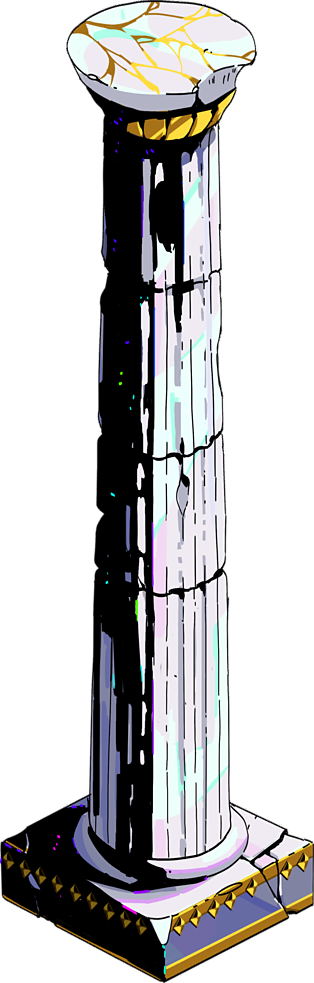
Phóng to11.1. Bảng Đối Soát Curses (Hình Phạt) & Blessings (Phước Lành)
- Lời nguyền tạm thời (
TemporaryTraits):ChaosCursePrimaryAttackTrait(Flayed): Mất 2-5 HP mỗi khi vung đòn Attack.ChaosCurseSecondaryAttackTrait(Maimed): Mất 2-5 HP mỗi khi bấm Special.ChaosCurseCastAttackTrait(Curtailed): Mất 2-5 HP mỗi khi bắn Cast.ChaosCurseDeathWeaponTrait(Caustic): Kẻ thù khi chết phát nổ một quả bom địa ngục ném thẳng vào người chơi.ChaosCurseHiddenRoomReward(Enshrouded): Toàn bộ biểu tượng phần thưởng tại các cửa phòng kế tiếp bị che giấu.ChaosCurseDamageTrait(Excruciating): Nhận thêm +20% đến +50% sát thương từ mọi nguồn.ChaosCurseNoMoneyTrait(Pauper): Không thể nhặt được bất kỳ đồng Obols nào trong suốt thời gian nguyền rủa.
- Phúc lành vĩnh viễn (
PermanentTraits):ChaosBlessingExtraChanceTrait(Chaos Defiance): Tặng thêm +1 mạng Death Defiance hồi sinh độc lập!ChaosBlessingAmmoTrait(Chaos Grasp): Tăng thêm +1 ngọc huyết Cast (cực kỳ quan trọng cho các build bắn phép).ChaosBlessingMeleeTrait(Chaos Strike): Tăng từ +20% đến +110% sát thương Attack.ChaosBlessingSecondaryTrait(Chaos Flourish): Tăng từ +30% đến +120% sát thương Special.
12. TIẾN TRÌNH VĨNH VIỄN: GƯƠNG BÓNG ĐÊM & KINH TẾ ĐỊA NGỤC
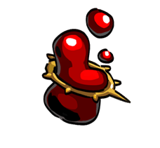
Phóng to• Chthonic Vitality: Hồi +3 HP sau mỗi căn phòng
• Death Defiance: 3 lần hồi sinh (Hồi 50% HP mỗi lần)
• Greater Reflex: +1 Lần Dash liên tiếp
• Boiling Blood: +50% Sát thương lên địch dính Cast
• Dark Foresight: +20% Cơ hội ra phòng Boons/Hammers
• Dark Regeneration: Hồi máu theo % Darkness nhặt được
• Stubborn Defiance: 1 lần hồi sinh miễn phí trong MỖI phòng
• Ruthless Reflex: +50% Sát thương khi né đòn sát nút
• Abyssal Blood: Giảm 30% tốc độ & sát thương của địch dính Cast
• Olympian Favor: +40% Cơ hội xuất hiện Boons Rare
12.3. Bảng Phân Loại Toàn Bộ Tài Nguyên & Tiền Tệ Cõi Âm Ty
Kinh tế trong Hades được chia thành hai hệ thống độc lập: Tài nguyên trong lượt chạy (Run Progress) và Tài nguyên vĩnh viễn (Meta-Progress):
| Biểu Tượng Gốc | Tên Tài Nguyên | Phân Loại Kinh Tế | Công Dụng & Giá Trị Kỹ Thuật Trong Mã Nguồn |
|---|---|---|---|
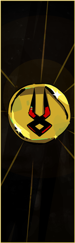 |
Đồng Xu Charon (Obols) | Trong Lượt Chạy | Mua Chúc phúc, Tín vật hồi máu và Phước lành tại Cửa hàng Charon & Giếng Charon (Well of Charon). Mất sạch khi chết. |
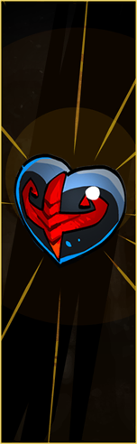 |
Trái Tim Nhân Mã (Centaur Heart) | Trong Lượt Chạy | Tăng ngay +25 Máu tối đa (Max HP) và hồi phục 25 HP cho Zagreus trong lượt vượt ải hiện tại. |
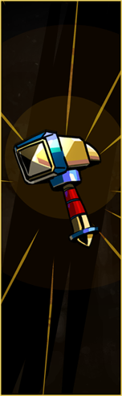 |
Búa Daedalus (Daedalus Hammer) | Trong Lượt Chạy | Thay đổi hoàn toàn cơ chế ra đòn của vũ khí. Tối đa 2 Búa/Run, cấm Reroll, quyết định hướng build chính. |
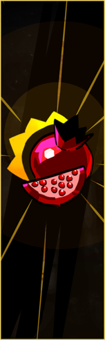 |
Quả Lựu Địa Ngục (Pom of Power) | Trong Lượt Chạy | Nâng cấp cấp độ (Level) của Boons. Hiệu lực suy giảm lũy thoái theo quy luật: L1 $ o$ L2 (+100%), L2 $ o$ L3 (+50%). |
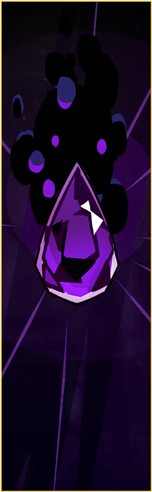 |
Bóng Tối (Darkness) | Tiến Trình Vĩnh Viễn | Tiền tệ cốt lõi để nâng cấp 24 kỹ năng trên Gương Bóng Đêm (Mirror of Night) và mở rộng danh hiệu Cung điện. |
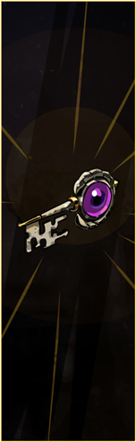 |
Chìa Khóa Âm Phủ (Chthonic Key) | Tiến Trình Vĩnh Viễn | Mở khóa các tầng kỹ năng mới trên Gương bóng đêm và mở khóa 6 món Vũ khí Địa ngục (Infernal Arms). |
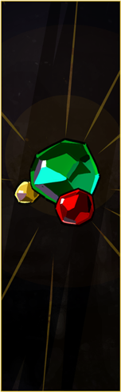 |
Đá Quý (Gemstones) | Tiến Trình Vĩnh Viễn | Thanh toán cho Nhà thầu Cung điện (House Contractor) để phục dựng sảnh đường và mở các đài hồi máu trong phòng. |
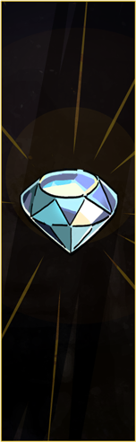 |
Kim Cương (Diamonds) | Tài Nguyên Quý Hiếm | Rơi khi hạ Hydra tại Asphodel. Dùng để mở các công trình hành chính cấp cao, mở nhạc nền và hợp đồng giải phóng linh hồn. |
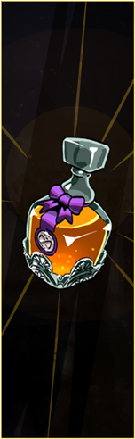 |
Máu Titan (Titan Blood) | Tài Nguyên Tối Thượng | Rơi khi hạ Meg tại Tartarus và Hades tại Styx. Dùng để mở khóa và nâng cấp tối đa (Level 5) các Biến thể Vũ khí Thần thoại. |
| Rượu Thần (Ambrosia) | Tài Nguyên Gắn Kết | Rơi khi hạ Theseus & Minotaur tại Elysium. Món quà tối thượng mở khóa Trợ thủ Chthonic Companions và biểu tượng tri kỷ. | |
| Hộp Sọ Nhiệt Độ (Heat Skull) | Độ Khó Thử Thách | Biểu tượng của Khế ước trừng phạt (Pact of Punishment), quản lý chỉ số Heat từ 1 đến 64. | |
| Củ Hành Erebus (Onion) | Phần Thưởng Trừng Phạt | Nhận được khi người chơi bị dính sát thương dù chỉ 1 lần trong Cổng Erebus Thử thách Hoàn hảo. Chỉ hồi +1 HP! |
13. KHO TÍN VẬT KEEPSAKES & BẠN ĐỒNG HÀNH HUYỀN THOẠI
14. THIẾT KẾ MÀN CHƠI, KẺ THÙ & CÁC TRẬN ĐẤU TRÙM
15. TRÍ THÔNG MINH NHÂN TẠO KẺ THÙ, BAO VÂY & SIÊU GIÁP
15.3. Dịch Ngược Thuật Toán Xếp Hàng Bao Vây (SurroundAI)
Trong mã nguồn EnemyAI.lua, hàm SurroundAI giải quyết một bài toán kinh điển trong thể loại hành động chặt chém: Làm sao để người chơi cảm thấy bị bao vây nghẹt thở bởi hàng chục con quái vật, nhưng không bao giờ bị chết oan do quá nhiều đòn tấn công dồn vào cùng một phần nghìn giây?
if GetDistance({ Id = enemy.ObjectId, DestinationId = targetId }) <= weaponAIData.AIAttackDistance
and ( weaponAIData.MaxAttackers == nil or TableLength( SurroundEnemiesAttacking ) < weaponAIData.MaxAttackers ) then
SurroundEnemiesAttacking[enemy.ObjectId] = true
AttackOnce( enemy, currentRun, targetId, weaponAIData )
SurroundEnemiesAttacking[enemy.ObjectId] = nil
end
 Phóng to
Phóng to
- Quy Tắc Độc Quyền
MaxAttackers:- Dù có 30 con quái vật vây quanh Zagreus, mảng toàn cục
SurroundEnemiesAttackingchỉ cho phép tối đa 2 đến 3 kẻ địch được quyền thực hiện hoạt ảnh tấn công trong cùng một cửa sổ thời gian! - Toàn bộ các quái vật còn lại bị cưỡng chế giữ khoảng cách
SurroundDistance(từ 250 đến 350 pixel) và phải chờ hết thời gian nghỉStandOffTime. - Nhờ thuật toán "biên đạo múa chiến đấu" (Combat Choreography) này, người chơi luôn có đủ thời gian phản xạ để đọc động tác của 2 quái vật tấn công trước, lướt né đòn và phản công, tạo nên cảm giác làm chủ trận đấu của một vị thần.
- Dù có 30 con quái vật vây quanh Zagreus, mảng toàn cục
15.3. Bảng Chân Dung Hệ Thống Kẻ Thù Trọng Yếu 4 Tầng Địa Ngục (Bestiary)
| Tầng Địa Ngục | Chân Dung Quái Vật Gốc | Tên Kẻ Thù & Đặc Tinh Kỹ Thuật Trong EnemyAI.lua | Cơ Chế Nguy Hiểm & Khắc Chế |
|---|---|---|---|
| Tartarus | Wretched Thug (Du Côn Nện Đá) | Cú vung chày cực mạnh quét 180 độ gây sát thương lớn. Khắc chế: Lướt ra sau lưng trước khi chày chạm đất. | |
| Tartarus | Wretched Witch (Phù Thủy Áo Tím) | Bắn chùm cầu tím ma thuật lan tỏa. Khắc chế: Dùng đòn Deflect của Athena phản ngược lại toàn bộ đạn. | |
| Tartarus | Wretched Sneak (Sát Thủ Tàng Hình) | Liên tục dịch chuyển tức thời và chọc lén từ phía sau. Khắc chế: Canh nhịp khựng sau cú lướt để dồn combo. | |
| Tartarus | Numbskull (Đầu Lâu Cắn Trộm) | Xuất hiện bầy đàn từ buồng sinh Spawner. Khắc chế: Đòn Dash-Strike diện rộng hoặc khiên nảy. | |
| Asphodel | Bloodless (Bộ Xương Đảo Lửa) | Bộ xương nhảy bổ cự ly xa từ biển nham thạch. Khắc chế: Dụ quái nhảy vào bẫy dung nham Magma để tự thiêu. | |
| Asphodel | Bloodless Wave-Maker (Tạo Sóng Nhiệt) | Dập tay tạo các làn sóng xung kích lửa quét toàn bản đồ. Khắc chế: Phá vỡ giáp vàng (Super Armor) để ngắt chiêu. | |
| Elysium | Flame Wheel (Xe Bánh Lửa Tự Sát) | Cơn ác mộng của High Heat: Tốc độ di chuyển điên cuồng, lao vào phát nổ tự sát. Khắc chế: Chạy vòng quanh rào chắn. | |
| Elysium | Great Chariot (Cỗ Xe Chiến Húc Đổ) | Húc thẳng đường ray với giáp siêu dày và bắn đạn chùm. Khắc chế: Lướt xuyên tường để xe húc đâm vào vách đá. | |
| Elysium | Exalted Greatshield (Chiến Binh Khiên) | Giơ khiên chặn 100% sát thương chính diện. Khắc chế: Buộc phải Lướt ra sau lưng (Backstab) hoặc dùng đòn nổ lan. | |
| Elysium | Exalted Strongbow (Cung Thủ Anh Hùng) | Bắn tên định vị laze đỏ chuẩn xác từ khoảng cách cực xa. Khắc chế: Nghe tiếng gài cung 'Keng' để Dash né đạn. | |
| Styx | Satyr Cultist (Nhân Dương Thổi Tiêu) | Thổi tiêu độc xanh gây hiệu ứng Rút máu kịch độc (Poison). Khắc chế: Lập tức tương tác giếng giải độc Mandragora. | |
| Styx | Giant Rat (Chuột Cống Khổng Lồ) | Rải các vũng độc dịch hạch chiếm toàn bộ diện tích phòng hẹp. Khắc chế: Dùng đòn đánh tầm xa hoặc Cast thả bom. | |
| Styx | Tiny Vermin (Mini-Boss Chuột Nhí) | Kẻ địch nhỏ bé nhưng sở hữu lượng máu khổng lồ và triệu hồi cả đàn quái phụ. Khắc chế: Bật Call thần thoại dồn dập. | |
| Styx | Cerberus (Chó 3 Đầu Gác Cổng) | Chặn cửa thoát duy nhất lên mặt đất. Chỉ chịu rời đi khi được Zagreus dâng túi thức ăn Satyr Sack thơm ngon! |
16. THUẬT TOÁN TẠO PHÒNG NGỤC TỐI & CƠ CHẾ QUA MÀN CHUYÊN SÂU
Cơ chế sinh phòng ngẫu nhiên (Procedural Chamber Generation) và điều phối phần thưởng qua màn trong Hades được điều khiển bởi hai tệp kịch bản trung tâm RoomManager.lua và RunManager.lua. Khác với các thuật toán ngẫu nhiên đơn thuần, Hades sử dụng mô hình Tự Điều Chỉnh Tỉ Lệ Thông Minh (Dynamic Self-Correcting Ratio) để đảm bảo mỗi lần chạy đều đem lại cảm giác mới lạ nhưng luôn cân bằng hoàn hảo về mặt độ khó và tài nguyên.
16.1. Thuật Toán Cân Bằng Tỉ Lệ Phần Thưởng Tự Điều Chỉnh (ChooseNextRewardStore)
Từ việc dịch ngược trực tiếp hàm ChooseNextRewardStore trong RoomManager.lua:
local targetMetaRewardsRatio = (run.CurrentRoom.TargetMetaRewardsRatio or run.Hero.TargetMetaRewardsRatio) - ( GetNumMetaUpgrades( "RunProgressRewardMetaUpgrade" ) * ( MetaUpgradeData.RunProgressRewardMetaUpgrade.ChangeValue - 1 ) )
local metaProgressChance = targetMetaRewardsRatio
local currentMetaProgressRatio = CalcMetaProgressRatio( run )
if currentMetaProgressRatio ~= nil then
metaProgressChance = metaProgressChance + (run.Hero.TargetMetaRewardsAdjustSpeed * (targetMetaRewardsRatio - currentMetaProgressRatio))
end
if RandomChance( metaProgressChance ) then
rewardStoreName = "MetaProgress"
else
rewardStoreName = "RunProgress"
end
- Hai Kho Phần Thưởng Đối Lập:
RunProgress(Sức mạnh chiến đấu tức thời trong run): Chúc phúc thần Olympus, Búa rèn Daedalus Hammer, Trái tim Centaur Heart (+25 HP), Quả lựu Pom of Power, Tiền vàng Obol.MetaProgress(Tài nguyên tiến trình vĩnh viễn): Bóng tối Darkness (nâng Gương), Đá quý Gemstones (xây Cung điện), Chìa khóa Chthonic Keys (mở khóa vũ khí/kỹ năng), Mật ngọt Nectar (tặng quà NPC).
- Cơ Chế Tự Sửa Lỗi Cân Bằng (Self-Correction Loop):
- Nếu trong các phòng trước người chơi đã nhặt quá nhiều tài nguyên
MetaProgress, thuật toán sẽ tự động hạ thấpmetaProgressChancexuống mức tối thiểu, ép buộc cánh cửa tiếp theo phải xuất hiện Chúc phúc hoặc Búa Daedalus. - Nhờ cơ chế này, người chơi không bao giờ rơi vào tình trạng "đói sức mạnh" khi bước vào các trận đấu trùm cuối tầng ngục.
- Nếu trong các phòng trước người chơi đã nhặt quá nhiều tài nguyên
- Tác Động Của Kỹ Năng Dark Foresight Trên Gương Bóng Đêm:
- Mỗi cấp của Dark Foresight trừ trực tiếp tỉ lệ
targetMetaRewardsRatio. Ở cấp tối đa (Cấp 10), nó giảm tới $-20%$ tỉ lệ ra tài nguyên vĩnh viễn, đẩy xác suất xuất hiện các phòng Chúc phúc và Búa rèn lên mức kinh ngạc $85% - 90%$, trở thành kỹ năng quan trọng nhất cho mọi kỷ lục Speedrun và High Heat!
- Mỗi cấp của Dark Foresight trừ trực tiếp tỉ lệ
16.2. Cấu Trúc Cây Chiều Sâu Phòng Ngục (Depth Progression Tree)
Hành trình vượt ngục của Zagreus được phân bổ qua 4 tầng địa ngục với các ngưỡng chiều sâu phòng (Chamber Depth) được quy định nghiêm ngặt:
| Tầng Ngục (Biome) | Chiều Sâu (Depth Range) | Phòng Cốt Truyện Bắt Buộc (Story Chamber) | Phòng Trùm Cuối Màn (Boss Chamber) |
|---|---|---|---|
| 1. Tartarus | Phòng 1 đến Phòng 14 | Sisyphus & Hòn đá Bouldy (Depth 6-9) | Megaera / Alecto / Tisiphone (Phòng 14) |
| 2. Asphodel | Phòng 15 đến Phòng 24 | Nàng thơ Eurydice (Depth 17-21) | Rồng Xương Lernaean Bone Hydra (Phòng 24) |
| 3. Elysium | Phòng 25 đến Phòng 36 | Dũng sĩ cô độc Patroclus (Depth 27-32) | Theseus & Asterius (Phòng 36) |
| 4. Temple of Styx | Phòng 37+ | Không có (Sảnh Hub Trung Tâm) | Chúa Tể Hades (Mặt đất Hy Lạp) |
- Quy Tắc Sinh Phòng
ChooseNextRoomDatatrong RunManager.lua:NeverRepeat: Engine lưu danh sách 8 phòng vừa đi qua; các phòng này bị cấm xuất hiện lại để tránh sự lặp lại về mặt bố cục địa hình.ForcedRooms: Khi chạm đúng ngưỡng độ sâu quy định (ví dụ: Depth 14 ở Tartarus), engine sẽ lập tức kích hoạt cờ cưỡng chếIsRoomForced = true, khóa toàn bộ các cửa khác và chỉ cho phép duy nhất cửa bước vào phòng Boss xuất hiện.- Mỗi tầng ngục luôn đảm bảo xuất hiện ít nhất: 1 Phòng Suối Nước Hồi Máu (Fountain Room) và 1 Phòng Cửa Hàng Charon (Shop Chamber) ngay trước khi đánh Boss.
16.3. Cơ Chế 3 Loại Cánh Cửa Bí Mật & Phòng Đặc Biệt
Bên cạnh các cánh cửa dẫn đường thông thường, engine sở hữu các điều kiện kiểm tra logic để mở ra 3 loại cánh cửa đặc biệt:
1. Cổng Hư Vô Chaos (Secret Door / Chaos Gate)
- Hàm kiểm tra:
IsSecretDoorEligibletrong RoomManager.lua. - Quy tắc xuất hiện: Xác suất tự nhiên khoảng $\sim 7%$, không thể xuất hiện trong phòng Boss, phòng Mini-boss hoặc phòng kế trước phòng Boss. Có thể ép xuất hiện bằng cách mua vật phẩm Light of Ixion tại Giếng Charon hoặc mang Tín vật Cosmic Egg.
- Cơ chế trả giá bằng máu: Khi bước xuống hố sâu Chaos, Zagreus bị trừ trực tiếp từ 20 đến 35 HP. Người chơi chỉ có thể bước vào miễn phí nếu đang đeo Tín vật Cosmic Egg của Chaos.
2. Cổng Thử Thách Erebus (Shrine Point Door / Infernal Gate)
- Hàm kiểm tra:
IsShrinePointDoorEligible. - Điều kiện nhiệt độ Hiệp ước Trừng phạt (Heat Requirement):
- Cổng Erebus ở Tartarus: Yêu cầu tối thiểu 5 Heat.
- Cổng Erebus ở Asphodel: Yêu cầu tối thiểu 10 Heat.
- Cổng Erebus ở Elysium: Yêu cầu tối thiểu 15 Heat.
- Quy tắc Thử Thách Hoàn Hảo (Perfect Clear Challenge):
- Toàn bộ đàn quái vật trong phòng là quái Tinh anh (Super Elite).
- Zagreus phải tiêu diệt toàn bộ kẻ địch mà KHÔNG ĐƯỢC NHẬN BẤT KỲ 1 SÁT THƯƠNG NÀO (kể cả trúng bẫy hay mất 1 giọt máu).
- Nếu hoàn thành hoàn hảo: Nhận phần thưởng cao cấp gấp đôi (Chúc phúc Heroic, Máu Centaur +50 HP, hoặc 250 Obol).
- Nếu trúng đòn: Toàn bộ phần thưởng biến mất và bị thay thế bằng một Củ Hành (Onion) — chỉ hồi đúng 1 HP kèm theo tiếng cười trêu chọc của thần linh!
3. Phòng Tranh Đấu Của Các Vị Thần (Trial of the Gods / Dual Boons Room)
- Xuất hiện ngẫu nhiên khi cánh cửa hiển thị biểu tượng của 2 vị thần cùng lúc (ví dụ: Zeus và Poseidon).
- Cơ chế Cơn Thịnh Nộ Của Thần Linh (
God's Wrath):- Người chơi buộc phải chọn 1 vị thần để nhận ơn trước. Vị thần còn lại sẽ cảm thấy bị xúc phạm và nổi trận lôi đình:
- Zeus: Giáng những cột sét liên hoàn đuổi theo vị trí người chơi.
- Aphrodite: Thả những quả tim định vị làm mê hoặc và gây sát thương lớn.
- Poseidon: Thả những đợt sóng thần quét ngang dọc bản đồ.
- Artemis: Thả vòng tròn ngắm bắn mưa tên từ trên trời.
- Demeter: Thả bão tuyết xoáy lạnh giá thu hẹp không gian di chuyển.
- Sau khi sống sót và đánh bại đàn quái vật, vị thần tức giận sẽ khen ngợi bản lĩnh của Zagreus và trao tặng chúc phúc thứ hai, biến đây thành phòng có giá trị cao nhất trong toàn bộ run đấu!
- Người chơi buộc phải chọn 1 vị thần để nhận ơn trước. Vị thần còn lại sẽ cảm thấy bị xúc phạm và nổi trận lôi đình:
16.4. Thuật Toán Xác Suất Mê Cung Đền Styx (Satyr Sack RNG)
Tầng cuối cùng của địa ngục - Đền Styx (Temple of Styx) - là một bài toán xác suất thú vị được lập trình trong RoomDataStyx.lua.
- Cấu trúc 5 Nhánh Hầm Mộ:
- Khu sảnh chính dẫn vào 5 đường hầm: 2 đường hầm có biểu tượng Đầu Lâu Đỏ (phòng Mini-boss cực khó nhưng phần thưởng gấp đôi) và 3 đường hầm thường.
- Mục tiêu duy nhất: Tìm ra Túi Thức Ăn Satyr Sack để cho chó ba đầu Cerberus ăn và mở đường lên mặt đất.
- Thuật Toán Phân Phối Xác Suất Tích Lũy:
- Nhánh thứ 1: Xác suất ra túi thức ăn là 0% Tuyệt đối. Engine cấm hoàn toàn việc tìm thấy túi ở nhánh đầu tiên để người chơi bắt buộc phải trải nghiệm độ khó của Styx.
- Nhánh thứ 2: Xác suất xuất hiện là ~54.5%.
- Nhánh thứ 3: Xác suất xuất hiện nâng lên ~75%.
- Nhánh thứ 4: Xác suất là 100% Bảo Hiểm Tuyệt Đối. Nếu người chơi đã dọn sạch 3 nhánh mà chưa thấy túi thức ăn, nhánh thứ 4 chắc chắn 100% sẽ chứa Satyr Sack, không bao giờ bắt người chơi phải đi cả 5 nhánh trừ khi họ cố tình đi vét tài nguyên!
16.5. Chu Trình Quản Lý Bộ Nhớ Khi Chuyển Màn Của Động Cơ The Forge
Khi Zagreus bước chân qua cánh cửa thoát hiểm (LeaveRoom), Engine C++ thực thi một chuỗi tác vụ dọn dẹp và nạp trước trong thời gian chỉ vài phần trăm giây:
FlushNativeLog(): Đẩy toàn bộ dữ liệu ghi log và số liệu thống kê phòng vừa qua xuống đĩa.DestroyRoomObjects(): Xóa sạch bộ nhớ heap của hàng chục thực thể quái vật, đường đạn, bẫy sàn nhà, và chướng ngại vật nổ.- Quản Lý VRAM Texture Atlases:
- Dỡ bỏ các Sprite Sheet của địa hình phòng cũ khỏi bộ nhớ card đồ họa (VRAM).
- Nạp trước (Preload) các khối dữ liệu Texture nén bằng LZ4 của phòng tiếp theo từ tệp
.pkg. - Nhờ quy trình xả và nạp trước thông minh này, Hades hoàn toàn không bao giờ xuất hiện màn hình chờ tải game (Loading Screen) ngắt quãng, duy trì tốc độ khung hình 60 FPS mượt mà tuyệt đối xuyên suốt toàn bộ hành trình vượt ngục.
16.6. Cơ Chế Lưu Checkpoint Tự Động & Các Sự Kiện Chạm Trán Đặc Biệt
1. Cơ Chế Checkpoint Tự Động Lưu Game Khi Qua Cửa (Anti-Save-Scumming)
Ngay khoảnh khắc Zagreus kích hoạt cánh cửa thoát hiểm và bước chân vào phòng mới, hàm AttemptUseDoor trong RoomManager.lua lập tức gọi lệnh:
SaveCheckpoint({ SaveToDisk = true })
- Ý Nghĩa Kỹ Thuật:
- Tệp
Profile1.savđược cập nhật tức thì trên ổ đĩa tại thời điểm căn phòng mới vừa được nạp vào bộ nhớ, trước khi bất kỳ đợt quái nào xuất hiện. - Nếu người chơi gặp tình huống nguy hiểm sắp chết mà cố tình nhấn
Alt + F4hoặc thoát game ra Menu chính, khi nạp lại game, họ sẽ xuất hiện tại chính căn phòng đó với thanh máu và trạng thái chính xác như lúc bước qua cửa. - Cơ chế này triệt tiêu hoàn toàn thủ thuật "Save Scumming" vốn rất phổ biến ở các tựa game Roguelite khác.
- Tệp
2. Rương Kho Báu Tính Giờ Ngầm (Infernal Trove / Time Challenge)
Xuất hiện với xác suất cơ bản 25% ở Tartarus và tăng dần ở các tầng sau, được điều khiển bởi kịch bản TimeChallengeTartarus:
- Nguyên lý Suy Giảm Tuyến Tính Theo Thời Gian:
- Khi mở rương, một đàn quái vật tinh anh xuất hiện dồn dập kèm theo đồng hồ đếm ngược.
- Phần thưởng khởi điểm: 150 Vàng Obol, hoặc 150 Bóng Tối, hoặc 100 Đá Quý, hoặc Trái Tim Centaur (+25 HP).
- Mỗi giây trôi qua trong trận chiến, lượng tài nguyên trong rương bị trừ dần theo thời gian thực. Nếu người chơi dọn phòng quá chậm, phần thưởng sẽ chạm mức sàn tối thiểu là 50 Obol / 50 Darkness!
3. Cuộc Chạm Trán Thần Chết Thanatos (Thanatos Encounter)
Được cấu hình bởi bảng BaseThanatos trong EncounterData.lua:
- Điều Kiện Xuất Hiện:
MaxThanatosSpawnsThisRun = 1: Tối đa chỉ xuất hiện 1 lần duy nhất trong toàn bộ run đấu.RequiredMinBiomeDepth = 3,RequiredMinCompletedRuns = 1: Chỉ có thể xuất hiện từ độ sâu thứ 3 trở đi sau khi người chơi đã hoàn thành ít nhất 1 lần vượt ngục thành công.
- Cơ Chế Thi Đấu Điểm Hạ Gục (
ThanatosKillsvsPlayerKills):- Ánh sáng căn phòng mờ dần, tiếng chuông tử thần vang lên và bản nhạc chuyển sang giai điệu đặc trưng của Thanatos.
- Thanatos bay lượn trên đấu trường, triệu hồi những vòng tròn tử thần màu tím khổng lồ gây sát thương hủy diệt lên quái vật sau 3 giây trễ.
- Hệ thống liên tục đếm số quái vật bị tiêu diệt bởi người chơi so với Thanatos. Nếu người chơi giành chiến thắng (số mạng hạ gục cao hơn), Thanatos sẽ mỉm cười tán thưởng và trao tặng một Trái Tim Centaur Heart (+25 HP) hoàn toàn miễn phí!
17. CÂN BẰNG ĐỘ KHÓ TỐI THƯỢNG: KHẾ ƯỚC TRỪNG PHẠT
• Middle Management: Thêm quái phụ & kỹ năng cho Mini-Boss.
• Benefits Package: Cấp 1-2 bổ trợ ngẫu nhiên cho quái tinh anh.
• Calisthenics Program: Tăng +15-30% máu toàn bộ kẻ thù.
• Forced Overtime: Quái tăng +20-40% tốc độ di chuyển và ra đòn.
• Routine Inspection: Tắt sạch từ 1 đến toàn bộ 12 bậc Gương Bóng Đêm.
• Approval Process: Bị cấm chọn 1-2 Boon ngẫu nhiên mỗi lần nhận thưởng.
18. GIẢI MÃ KỶ LỤC SIÊU CẤP: BÍ MẬT CHINH PHỤC HEAT 64
Heat 64 được xem là đỉnh cao độ khó khắc nghiệt nhất lịch sử ngành công nghiệp game. Để kích hoạt Heat 64, người chơi phải bật tất cả 15 điều khoản của Khế Ước Trừng Phạt ở mức tối đa tuyệt đối:
18.1. Tại Sao Heat 64 Từng Bị Coi Là Bất Khả Thi Về Mặt Toán Học?
- Routine Inspection 4: Tắt sạch toàn bộ 12 nâng cấp của Gương bóng đêm:
- Không có mạng hồi sinh (0 Death Defiance, 0 Stubborn Defiance).
- Chỉ có 1 lượt Lướt duy nhất (Mất Greater Reflex).
- Chỉ có 50 HP khởi điểm và không tăng sát thương khi cắm Cast.
- Lasting Consequences 4: Giảm 100% khả năng hồi máu (Mọi đài phun nước, vật phẩm hồi máu, Centaur Heart đều hồi đúng 0 HP). Bất kỳ một đòn đánh trượt chân nào cũng là tổn thương vĩnh viễn không thể cứu vãn.
- Approval Process 2: Hệ thống tự động gạch bỏ 2 trong 3 lựa chọn chúc phúc, người chơi bị tước đoạt hoàn toàn quyền tự do xây dựng Build.
- Damage Control 2: Mọi kẻ địch có 2 tầng khiên chống đòn đánh đầu tiên, vô hiệu hóa các vũ khí đánh chậm.
18.2. Giải Pháp Của Kỷ Lục Gia Thế Giới (Unseeded Clear)
- Vũ khí được chọn: Aegis Shield - Aspect of Zeus.
- Chiến thuật "Rùa Bò Bất Tử" (Shield Turtle):
- Nút giữ đòn đánh của Khiên Aegis cho phép chặn 100% sát thương đạn đạo và cận chiến trước mặt.
- Đòn Special phóng đĩa sấm sét Blitz Disc bay lơ lửng tại chỗ để bào mòn 2 lớp giáp xanh của Damage Control và gây sát thương từ xa trong khi Zagreus vẫn giơ khiên ẩn nấp an toàn sau góc tường.
19. KIẾN TRÚC ÂM THANH TƯƠNG TÁC ĐA TẦNG
20. MINI-GAME CÂU CÁ & ĐO LƯỜNG PHẢN XẠ MILI-GIÂY
 Phóng to
Phóng to
21. BẬC THẦY TỐC ĐỘ: VẬT LÝ & KỸ THUẬT SPEEDRUNNING ĐỈNH CAO
- Hủy hoạt cảnh đòn đánh bằng lướt (Dash-Strike Animation Canceling):
- Đòn chém thường của kiếm và gậy có thời gian hồi vung kiếm (Recovery frames). Bằng cách bấm
Tấn công + Lướtgần như đồng thời, khung hình phục hồi bị triệt tiêu hoàn toàn, đẩy DPS lên gấp 2.5 lần.
- Đòn chém thường của kiếm và gậy có thời gian hồi vung kiếm (Recovery frames). Bằng cách bấm
- Cưỡng bức vị trí xuất hiện của quái (Spawn Point Manipulation):
- Các điểm xuất hiện quái trong phòng được định trước theo tọa độ lưới. Bằng cách đứng tại tâm bàn cờ ngay khi đợt quái trước bị hạ, người chơi buộc đợt quái tiếp theo phải xuất hiện tập trung vào một góc hẹp, tối ưu hóa đòn nổ bom diện rộng của Exagryph (Súng Eris).
- Chiến thuật Meg Summon nổ boss:
- Bạn đồng hành Battie của Megaera gây 2500 sát thương thẳng hàng. Người chơi căn thời điểm Boss vừa hết trạng thái bất tử (Immunity Shield) để kích hoạt, hạ gục ngay lập tức toàn bộ thanh máu của Lernaean Hydra trong chưa đầy 3 giây.
22. PHÂN TÍCH KỸ THUẬT ĐẢO NGƯỢC & BỘ DI CHUYỂN (COMBAT AI) CÁC BOSS
Kiến trúc AI của các trận đấu trùm trong Hades được xây dựng trên nền tảng máy trạng thái phức hợp (Complex Finite State Machine - FSM) được lập trình hoàn toàn bằng kịch bản kẹp trong EnemyData.lua và WeaponData.lua. Khác với các game Roguelike truyền thống nơi boss chỉ đơn thuần lặp lại một chuỗi tấn công cố định (scripted loops), boss trong Hades liên tục tính toán khoảng cách đến người chơi (AIAttackDistance), kiểm tra tầm nhìn trực tiếp (AIRequireUnitLineOfSight), góc tấn công (AIAngleTowardsPlayerWhileFiring), và độ ưu tiên chiêu thức dựa trên chỉ số máu hiện tại (RequiredMaxHealthFraction).
22.1. Bảng Thông Số Kỹ Thuật AI & Bộ Di Chuyển Của Các Trùm Chính
| Trùm (Boss) | Máu Cơ Bản (HP) | Máu Pact EM (HP) | Đòn Tấn Công Chính (Signature Weapons) | Thời Gian Gồng (Wind-up) | Bán Kính/Tầm Đánh | Cơ Chế Độc Bản (Unique Mechanic) |
|---|---|---|---|---|---|---|
| Megaera | 4,400 | + Hiệp trợ chị em | HarpyWhipCombo, HarpyBeam, HarpyLightning |
0.35s - 1.0s | Tầm xa 400 - 600 | Đạn chùm lan tỏa, bẫy sét xoay vòng |
| Alecto | 4,800 | + Hiệp trợ chị em | HarpyBladeRage, HarpyLungeAlecto |
0.25s - 0.6s | Toàn bản đồ (Lưỡi cưa) | Thanh Nộ (Rage Bar): Đầy nộ hóa bất tử ngắn & cuồng bạo |
| Tisiphone | 5,000 | + Hiệp trợ chị em | HarpyWhipShotRage, HarpyLightningCone |
0.4s - 0.8s | Cận chiến 300 | Thu hẹp phòng (Room Shrink): 3 giai đoạn co cụm đấu trường |
| Bone Hydra | 6,600 | EM2 Đảo hẹp | 4 Đầu chính: Dart, Lava, Wave, Slam | 0.5s - 1.2s | Bán kính 800 | 3 giai đoạn miễn nhiễm: Gọi 3 đầu (66% HP) & 6 đầu (33% HP) |
| Asterius | 10,000 | 14,000 (EM3 Giáp) | MinotaurBullRush, MinotaurAxeSpin |
0.6s - 0.7s | Bán kính 350 - 450 | Húc tường tự choáng; EM3 xoay rìu bắn sóng chấn động |
| Theseus | 9,000 | 13,000 (EM3 Xe) | TheseusSpearThrow, TheseusWrath |
1.35s - 1.8s | Xuyên map (Giáo phóng) | Khiên chặn 100% mặt trước; Cầu khẩn 8 vị thần Olympus |
| Lord Hades | 34,000 (2 Phases) | 66,000 (3 Phases EM4) | HadesBidentSpin, HadesLaserRadial, HadesCast |
0.35s - 0.6s | Bán kính 350 - 1200 | Găm huyết thạch nhận 200% dmg; EM4 Màn đêm & Cerberus |
| Charon (Ẩn) | 10,000 | Không áp dụng | CharonMeleeCombo1 (7 nhịp), CharonGhostWave |
0.2s - 0.4s | Bán kính 330 | Quạt chèo 50 sát thương/hit; Thưởng Thẻ giảm giá 20% |
22.2. Phân Tích Chuyên Sâu Từng Trận Đấu Trùm
1. Bộ Ba Nữ Thần Phục Hận (The Furies - Tartarus)
Trận đấu với các Nữ Thần Báo Thù minh họa rõ nét triết lý thiết kế biến thể (Variations Design) của Supergiant Games:
- Megaera (Sự trừng phạt): Sở hữu các đòn quét roi
HarpyWhipArcvà gọi vòng lôi điệnHarpyLightning. Điểm yếu của Meg là thời gian gồng đòn (Wind-up) khá rõ ràng (0.5s), tạo khoảng trống hoàn hảo để người chơi lướt vòng ra sau lưng (Backstab). - Alecto (Sự cuồng nộ): Không có chu kỳ nghỉ cố định như Meg. Alecto sở hữu thanh nộ
RageBar— mỗi khi trúng đòn, thanh nộ tăng lên; khi đạt 100%, cô bước vào trạng thái cuồng nộ (EnragedState), miễn nhiễm ngắt đòn, tốc độ di chuyển tăng 40%, và thả các lưỡi cưa di độngHarpyBladeRageđuổi theo Zagreus vô cùng khó chịu. - Tisiphone (Sự báo thù): Không có đòn tấn công diện rộng phức tạp, nhưng Tisiphone sở hữu cơ chế thay đổi hình học không gian duy nhất trong game: Thu hẹp phòng đấu (
RoomShrink).- Khi máu tụt xuống 75%, 50% và 25%, Tisiphone kích hoạt màn sương xanh biếc cuốn bay ranh giới phòng, thu nhỏ diện tích sàn đấu lại 30% mỗi lần. Ở phase cuối, sàn đấu chỉ còn là một ô vuông chật hẹp khoảng vài mét vuông, triệt tiêu hoàn toàn lợi thế giữ khoảng cách của các vũ khí tầm xa như Cung Coronacht hay Súng Exagryph, ép người chơi phải phản xạ né đòn cận chiến ở cự ly không tưởng.
2. Rồng Xương Lerna (Lernaean Bone Hydra - Asphodel)
Lernie là bài kiểm tra khả năng dọn dẹp mục tiêu diện rộng (Crowd Control):
- 4 Biến thể đầu chính ngẫu nhiên: Mỗi run, đầu chính của Hydra sẽ mang một thuộc tính ngẫu nhiên: Dung nham (Lavamaker), Sóng xung kích (Wavemaker), Bắn gai độc (Dartmaker), hoặc Triệu hồi quái xương (Summoner).
- Cơ chế Miễn nhiễm Tuyệt đối (
Invulnerable Shield): Khi máu giảm xuống 66% và 33%, Lernie bọc một lớp khiên đá bất hoại và triệu hồi các đầu phụ xung quanh. Lớp khiên này chỉ biến mất khi toàn bộ đầu phụ bị tiêu diệt. - Extreme Measures 2 (EM2): Không gian đấu bị ngập trong dung nham sôi sục, các đảo đá rút gọn chỉ còn một diện tích nhỏ ở giữa, khiến việc di chuyển né đòn đập đầu (
HydraHeadSlammer) trở nên cực kỳ nguy hiểm nếu không có chúc phúc tăng số lần Dash của Hermes.
3. Cặp Đôi Huyền Thoại Elysium: Theseus & Asterius
Đây là đỉnh cao của thiết kế AI Hiệp đồng (Coordinated Dual-Boss AI):
- Cơ chế Bao vây & Bọc lót: Asterius đảm nhận vai trò Đấu sĩ cận chiến (Aggressive Melee Bruiser) liên tục áp sát và dùng đòn húc
MinotaurBullRush, ép Zagreus phải di chuyển liên tục. Trong khi đó, Theseus đóng vai trò Xạ thủ tầm xa (Ranged Sniper) với ngắm giáo chữ thập màu hồng chớp đỏ (TheseusSpearThrow, thời gian khóa mục tiêu từ 1.35s đến 1.8s). - Khiên Chắn Tuyệt Đối (
Frontal Shield Block): Theseus giơ khiên thần chặn đứng 100% sát thương từ góc 180 độ phía trước mặt. Chiến thuật duy nhất là đánh lừa hắn phóng giáo rồi lướt ra sau lưng đâm lén, hoặc dùng đòn nảy của Khiên Zeus / Đạn nổ Súng Rail. - Theseus Wrath (Khi HP < 50%): Theseus quỳ xuống cầu xin sự trợ giúp từ đỉnh Olympus. Engine sẽ chọn ngẫu nhiên 1 trong 8 vị thần (Zeus, Poseidon, Athena, Ares, Aphrodite, Artemis, Dionysus, Demeter) để dội bão nguyên tố liên tục lên đấu trường trong suốt phần còn lại của trận đấu.
- Extreme Measures 3 (EM3):
- Asterius được trang bị mũ giáp và giáp trụ kim loại sáng loáng, đòn xoay rìu tạo thêm sóng chấn động lan tỏa toàn bản đồ.
- Theseus bước lên cỗ chiến xa bọc thép Macedonian Chariot trang bị hai nòng súng máy xả đạn liên thanh và thả bom chùm
TheseusChariotClusterBombkhắp sàn đấu.
4. Chúa Tể Địa Ngục (Lord Hades - Surface / Greece)
Trận đấu trùm cuối cùng được phân tích trực tiếp từ đoạn mã nhị phân và dữ liệu Lua:
 Phóng to
Phóng to
- Phase 1:
HadesCast: Phóng viên huyết thạch xanh lá cây vào Zagreus. Khi găm trúng, hiệu ứngHadesStoredAmmoVulnerabilitykích hoạt:StoredAmmoMultiplier = 2.0— Zagreus sẽ phải nhận gấp đôi (+100%) sát thương từ mọi đòn đánh của Hades trong suốt thời gian ngọc găm trên người!HadesInvisibility: Hades tan biến vào cơn bão tuyết, để lại dấu chân mờ trên nền tuyết trắng. Hắn có thể bất ngờ xuất hiện từ hư vô và tung cú đâm giáo quét sạch lượng máu lớn.
- Phase 2:
- Hào quang xanh bùng cháy (
Phase2VFX = "HadesFlameAura"). Hades triệu hồi các bình sọHadesTombstoneUrnphát ra sóng chấn động xanh lá nếu bị vỡ. HadesLaserRadial: Hades bay lên không trung, phát ra 3 tia laze cực mạnh xoay tròn 360 độ (ở máu dưới 30%, biến thành 8 tia laze bao phủ toàn bộ màn hình). Điểm an toàn duy nhất là nấp sau các tảng đá lớn hoặc áp sát ngay chân Hades nếu có kĩ năng phản xạ đòn của Athena.
- Hào quang xanh bùng cháy (
- Phase 3 (Extreme Measures 4 - EM4):
- Đây là thử thách khó nhất trong lịch sử các game Roguelite: Hades được hồi sinh thêm một lần nữa với 22,000 HP (tổng cộng cả 3 phase là 66,000 HP).
- Toàn bộ nhạc nền chuyển sang bản metal dồn dập "The Unseen Ones". Màn hình bị bao phủ bởi lớp sương mù bóng tối
Darkness, tầm nhìn của người chơi bị co cụm chỉ còn vài mét quanh nhân vật, thanh máu của Hades biến mất khỏi giao diện. - Hades cất tiếng gọi: "Cerberus!!". Chó ba đầu khổng lồ Cerberus nhảy bổ vào đấu trường (
Cerberus_HadesAssistJumpIn_Bink), dội những cơn mưa đá lửa khổng lồ từ trên trời xuống khắp mặt đất.
5. Kẻ Lái Đò Bí Ẩn (Secret Boss: Charon)
- Điều kiện kích hoạt: Khi ghé thăm cửa hàng của Charon ở giữa tầng ngục, nếu xuất hiện một túi tiền 300 Obol nằm phía sau lưng Charon với biểu tượng bàn tay, người chơi có thể tương tác để "mượn trộm". Charon sẽ nổi giận và kéo Zagreus vào một không gian đấu trường hư vô riêng biệt.
- Bộ di chuyển hủy diệt:
- Cú quạt mái chèo cận chiến
CharonMeleeStraightvàCharonMeleeCombo1(combo 7 nhịp liên tiếp) gây ra từ 40 đến 50 sát thương mỗi đòn. Với thanh máu khởi đầu chỉ 50-100 HP ở Tartarus, chỉ cần trúng 2 đòn là người chơi lập tức tử nạn! CharonGhostWave: Thả những bức tường linh hồn tím trôi dạt khắp sàn đấu, vừa gây sát thương vừa triệt tiêu đường đạn của người chơi.
- Cú quạt mái chèo cận chiến
- Phần thưởng chiến thắng: Zagreus nhận lại túi 300 Obol và nhận được Thẻ Khách Hàng Thân Thiết (Loyalty Card): Giảm vĩnh viễn 20% giá của tất cả các mặt hàng tại Shop Charon và Giếng Well of Charon trong suốt run đấu đó.
23. GIẢI MÃ KIẾN TRÚC KỊCH BẢN LỜI THOẠI (NARRATIVE FSM)
Một trong những kỳ tích vĩ đại nhất của Supergiant Games được cả ngành công nghiệp thán phục là Hệ thống Kịch bản Tương tác Động (Dynamic Narrative State Machine). Trong khi các game Roguelite khác thường bỏ qua cốt truyện sau vài giờ chơi, Hades sở hữu một kho kịch bản khổng lồ hơn 300,000 từ ngữ với 6,041 đoạn thu âm giọng lồng tiếng (Voice Over - VO Cues) và 1,252 cờ kích hoạt duy nhất một lần (PlayOnce = true), đảm bảo người chơi có thể chơi hơn 100 giờ mà hầu như không bao giờ nghe lặp lại một câu thoại đơn điệu nào.
23.1. Hơn 100 Cờ Điều Kiện Tiên Quyết (Contextual Condition Engine)
Khảo sát trực tiếp tệp NPCData.lua và DeathLoopData.lua phát hiện engine sử dụng hơn 100 loại biến cờ logic để quyết định câu thoại nào được cất lên:
-- Ví dụ điều kiện kích hoạt một đoạn thoại đặc biệt của Hades khi Zagreus mang theo Vũ khí Stygius với Biến thể Arthur
ActivateRequirements =
{
RequiredWeapon = "SwordWeapon",
RequiredLastInteractedWeaponUpgrade = "SwordArthurAspect",
RequiredMinCompletedRuns = 5,
RequiredFalseTextLines = { "HadesArthurReaction01" },
RequiredUnitAlive = "NPC_Hades_01",
}
Một số nhóm cờ điều kiện cốt lõi bao gồm:
- Truy nguyên cái chết (Death Traceability):
RequiredLastKilledByUnits: Xác định chính xác loài quái nào vừa kết liễu Zagreus (ví dụ: Wretched Sneak, Numbskull, hay Lôi thần Megaera).RequiredLastKilledByWeaponNames: Nhận diện nguyên nhân tử vong do môi trường (bẫy chông Tartarus, đứng trong dung nham Asphodel, trúng đạn bẫy tên Elysium).
- Tiến trình chúc phúc & Vũ khí (Build Contextual Awareness):
RequiredRunHasOneOfTraits: Nhận diện Zagreus đang mang chúc phúc của vị thần nào (ví dụ: Poseidon sẽ trêu chọc nếu thấy Zagreus mang chúc phúc của Athena).RequiredWeapon&RequiredMinUnlockedWeaponEnchantments: Nhận biết dạng vũ khí và biến thể ẩn (Hidden Aspects) đang cầm trên tay.
- Mối quan hệ xã hội & Nhiệm vụ phụ (Social & Quest Progression):
RequiredMinNPCInteractions,RequiredLifetimeResourcesSpentMin,RequiredAnyCosmetics: Theo dõi mức độ trùng tu Cung điện Hades qua nhà thầu House Contractor để mở khóa các hội thoại khen ngợi hoặc phàn nàn của Nyx, Hades, và Dusa.
23.2. Ma Trận Phản Ứng Cái Chết Của Hypnos (Hypnos Reaction Matrix)
Ngay khi Zagreus trồi lên từ Hồ Máu (DeathPool) trở về sảnh chính, nhân vật đầu tiên tiếp đón luôn là Thần Ngủ Hypnos cầm bảng ghi chép. Đoạn kịch bản của Hypnos trong DeathLoopData.lua hoạt động như một hệ thống chẩn đoán lỗi (Diagnostic Logger):
- Nếu Zagreus chết do Bẫy gai (Spike Traps): Hypnos sẽ ngạc nhiên hỏi: "Ồ, cậu bị đâm bởi chông nhọn à? Lần sau thử nhìn xuống chân xem sàn nhà có lỗ không nhé!"
- Nếu chết do Trúng độc Satyr (Satyr Poison) ở Đền Styx: Hypnos sẽ nhắc nhở: "Cậu bị nhiễm độc tố à? Nhớ uống nước ở các giếng giải độc Mandrake gần đó chứ đừng để độc rút cạn máu như vậy!"
- Nếu chết do Chúa tể Hades: Hypnos sẽ thì thầm kính sợ: "Cậu lại bị chính Chúa tể Hades đập tan tác à? Thôi đừng buồn, ngài ấy là chủ nhân của tất cả chúng ta mà!"
23.3. Hệ Thống Khóa Tim (Heart Locks) & 6 Trợ Thủ Cổ Đại (Chthonic Companions)
Khi tặng đủ Mật Ngọt (Nectar) cho các nhân vật thân thiết, thanh tình cảm sẽ xuất hiện biểu tượng Ổ Khóa Tim (HeartLock). Để phá khóa, người chơi phải hoàn thành các chuỗi nhiệm vụ ẩn (Favor Quests), sau đó tặng Ambrosia để nhận 6 vật phẩm Trợ Thủ Thần Thánh triệu hồi chiến đấu:
| Trợ Thủ (Companion) | Người Ban Tặng | Hoạt Ảnh Triệu Hồi (VFX) | Tác Dụng Trong Giao Tranh |
|---|---|---|---|
| Battie | Megaera | Cột lôi điện tím rực | Đánh sét diện rộng theo đường thẳng gây 2,500 sát thương tức thì |
| Antos | Achilles & Patroclus | Song mã anh hùng xuất trận | Đâm thương liên hoàn vào 2 mục tiêu có máu cao nhất gây 2 x 1,500 sát thương |
| Rib | Skelly | Hình nhân rơm thế mạng | Triệu hồi bộ xương Skelly với 1,000 HP thu hút toàn bộ hỏa lực của quái vật |
| Fidi | Dusa | Nàng rắn bay lượn | Bắn 100 viên đạn hóa đá gây sát thương và làm chậm mục tiêu liên tục trong 15 giây |
| Shady | Sisyphus & Bouldy | Hòn đá Bouldy rơi từ trời | Gây 1,000 sát thương diện rộng và rơi ra một lượng lớn Máu, Vàng Obol, và Bóng Tối |
| Mort | Thanatos | Lưỡi hái Tử thần khổng lồ | Sau 2 giây trễ, lưỡi hái chém xuống một vùng cực rộng gây 3,500 sát thương hủy diệt |
24. CẤU TRÚC LƯU TRỮ DỮ LIỆU SAVEGAME NHỊ PHÂN (PROFILE1.SAV)
Tệp lưu trữ tiến trình của Hades (Profile1.sav) được thiết kế theo chuẩn nhị phân độc quyền của Supergiant Games, kết hợp giữa tốc độ đọc ghi cực nhanh và khả năng bảo mật chống gian lận.
24.1. Đặc Tả Cấu Trúc Header Nhị Phân
Khảo sát cấu trúc file nhị phân của Profile1.sav:
+-----------------------------------+-----------------------------------+
| Magic Bytes (0x10, 0x00, 0x00, 0x00) | Save Version (0x10 / Int32 = 16) |
+-----------------------------------+-----------------------------------+
| Engine Version (0x08 / Int32 = 8) | Compressed Length (Int32, Bytes) |
+-----------------------------------+-----------------------------------+
| Decompressed Length (Int32, Bytes)| LZ4 Compressed Data Block Stream |
| | (Toàn bộ snapshot bảng GameState) |
+-----------------------------------+-----------------------------------+
| Checksum Adler-32 / CRC-32 (4 Bytes cuối bảo vệ tính toàn vẹn file) |
+-----------------------------------+-----------------------------------+
- Thuật toán nén: Sử dụng LZ4 Compression — cùng thuật toán giải nén thời gian thực mà file nhị phân
EngineWin64s.dllxuất hàmLZ4_decompress_safe_native(RVA0x003709f0). - Nội dung giải nén: Sau khi giải nén khối LZ4, dữ liệu trả về một chuỗi bảng nhị phân tuần tự hóa (Serialized Lua Table) phản ánh trực tiếp cấu trúc biến nhớ của Lua 5.2.
24.2. Bản Đồ Dữ Liệu Cốt Lõi Trong Savegame
GameState.RunSeed: Hạt giống ngẫu nhiên 32-bit quyết định toàn bộ chuỗi phòng, phần thưởng chúc phúc và vị trí xuất hiện của búa Daedalus trong toàn bộ run. Hạt giống này được cố định ngay khi bước qua cánh cửa đầu tiên, triệt tiêu hoàn toàn thủ thuật gian lận thoát game nạp lại (Save Scumming) để đổi chúc phúc.GameState.TraitsTaken: Từ điển ghi nhận mọi chúc phúc, vật phẩm Hermes và nâng cấp Búa rèn đã từng nhận, phục vụ bách khoa toàn thư Codex.GameState.MetaUpgradeState: Mức độ nâng cấp 24 kỹ năng trên Gương Bóng Đêm (Mirror of Night).GameState.Cosmetics: Danh sách hàng trăm vật phẩm trang trí cung điện đã mua từ Nhà thầu Âm phủ.
25. NỀN TẢNG KỸ THUẬT MODDING HADES (LUA HOOKING FRAMEWORK)
Một điểm đặc sắc khác của Hades là tính mở tuyệt đối trong kiến trúc game. Supergiant Games không biên dịch mã nguồn kịch bản thành bytecode nhị phân kín (luac), mà để nguyên văn bản dạng mã nguồn thuần (Plain text .lua) trong thư mục Content/Scripts/.
25.1. Cơ Chế Monkey Patching & ModUtil Framework
Cộng đồng modding quốc tế đã phát triển bộ công cụ tiêu chuẩn ModUtil dựa trên kỹ thuật Can thiệp hàm động (Dynamic Monkey Patching). Thay vì chỉnh sửa trực tiếp các tệp gốc làm xung đột giữa các bản mod, ModUtil bọc đè lên các hàm có sẵn thông qua bảng môi trường toàn cục _G:
-- Ví dụ mã nguồn Mod: Tự tạo cơ chế Khiên Năng Lượng mới cho Zagreus
ModUtil.Base.Wrap("CalculateDamageMultipliers", function(baseFunc, victim, attacker, weaponData, triggerArgs)
local multipliers = baseFunc(victim, attacker, weaponData, triggerArgs)
-- Nếu mục tiêu là Zagreus và đang kích hoạt Thần lực Athena
if victim == CurrentRun.Hero and HeroHasTrait("AthenaDefenseTrait") then
multipliers = multipliers * 0.5 -- Giảm 50% sát thương nhận vào
CreateAnimation({ Name = "ShieldSparkFx", DestinationId = CurrentRun.Hero.ObjectId })
end
return multipliers
end)
25.2. Đóng Gói Mỹ Thuật Qua Deppth2 & SGGPIO
Nhờ bộ công cụ dịch ngược deppth2 mà chúng tôi sử dụng trong bài nghiên cứu này, các modder có thể tạo thêm các gói texture atlas mới, chuyển đổi file PNG thành chuẩn nén DirectDraw Surface (DDS / BC7) và liên kết vào hệ thống manifest của game, cho phép thay đổi trang phục nhân vật, giao diện HUD, hoặc bổ sung các vị thần mới như Apollo hay Hestia một cách hoàn toàn tự nhiên.
26. KHẢO SÁT MỸ THUẬT ĐỊA HÌNH & THIẾT KẾ MÀN CHƠI TOÀN BIOME (LEVEL DESIGN & CHAMBER LAYOUTS)
Hades dẫn dắt người chơi đi qua một hành trình thị giác ngoạn mục với 7 tầng ngục có ngôn ngữ thiết kế, bảng màu và nhịp điệu gameplay hoàn toàn khác biệt:
26.1. Kiến Trúc Danh Mục Phòng Của 4 Tầng Ngục Chính (Chamber Nomenclature)
Dịch ngược trực tiếp từ các tệp dữ liệu phòng RoomDataTartarus.lua, RoomDataAsphodel.lua, RoomDataElysium.lua, và RoomDataStyx.lua:
| Biome | Tiền Tố Phòng | Tổng Số Phòng Thiết Kế | Phân Loại Phòng Cụ Thể | Bẫy Môi Trường Đặc Trưng (Traps) |
|---|---|---|---|---|
| Tartarus | A_ |
39 Phòng | 25 Combat (A_Combat01-25), 4 Mini-boss, 3 Boss (A_Boss01-03), 1 Story (A_Story01 Sisyphus), 1 Shop, 1 Reprieve |
SpikeTrap (Bẫy chông sàn 20 dmg), BlastCube (Đá nổ rỉ sét 30 dmg) |
| Asphodel | B_ |
23 Phòng | 12 Combat (B_Combat01-12), 2 Mini-boss, 6 Boss, 1 Story (B_Story01 Eurydice), 1 Shop, 1 Reprieve |
DamageTiles / Lava (Dung nham giật 5 HP/0.2s), SkullSpawner (Bẫy sọ nổ) |
| Elysium | C_ |
25 Phòng | 15 Combat (C_Combat01-15), 3 Mini-boss, 6 Boss, 1 Story (C_Story01 Patroclus), 1 Shop, 1 Reprieve |
BowPillar (Trụ bắn nỏ xoay 360°), EggTrap (Bẫy trứng nổ), Mắt linh hồn tái sinh |
| Temple of Styx | D_ |
28 Phòng | 6 Combat thông thường, 18 Mini-boss hẹp dạng ống, 1 Reprieve, Sảnh Hub chính | AxeTrap (Lưỡi rìu chém ngang trần nhà), PoisonVent (Vòi phun độc rút máu) |
26.2. Phân Tích Thiết Kế Màn Chơi Từng Tầng Ngục (Chamber Design Philosophy)
1. Tartarus (Hầm Ngục Đá Xanh Ngọc - Ngột Ngạt & Dạy Cơ Bản)
- Thiết kế hình học: Không gian chật hẹp, nhiều góc tường vuông $90^\circ$ và cột đá vụn.
- Mục tiêu sư phạm (Pedagogical Design):
- Dạy cho người chơi cơ chế Va Chạm Góc Tường (Wall Slam): Dồn quái vật vào góc tường để đập nát giáp ảo.
- Dạy quan sát địa hình: Bẫy chông
SpikeTrapcó các lỗ tròn trên sàn nhà; người chơi có thể lướt qua bẫy để dụ quái vật dẫm lên tự sát.
2. Asphodel (Biển Lửa Dung Nham - Kiểm Tra Độ Cơ Động)
- Thiết kế hình học: Các quần đảo đá vụn kết nối với nhau qua những khoảng không gian ngập tràn nham thạch sôi sục.
- Cơ chế Nham Thạch (
DamageTiles):- Khi Zagreus đứng trên dung nham, sát thương được giật liên tục mỗi 0.2 giây (bắt đầu từ 5 HP/tick và tăng dần nếu đứng quá 1 giây).
- Ép buộc người chơi phải liên tục thực hiện các cú Dash xuyên dung nham, triệt tiêu lối chơi đứng yên bắn tỉa của người chơi mới.
3. Elysium (Miền Cực Lạc Vĩnh Hằng - Chiến Thuật Tầm Xa & Ưu Tiên Mục Tiêu)
- Thiết kế hình học: Đấu trường cẩm thạch rộng lớn, thoáng đãng, tráng lệ nhưng đầy rẫy các trụ bắn nỏ xoay
BowPillarphóng 4 mũi tên liên tục. - Cơ chế Tái Sinh Linh Hồn (
ShadeRegen):- Khi các chiến binh Elysium (Kiếm, Thương, Khiên, Cung) bị tiêu diệt, họ biến thành một quả cầu linh hồn lơ lửng (
ShadeEye). - Nếu không tiêu diệt quả cầu này trong vòng 5 giây, linh hồn sẽ tái sinh lại thành một kẻ địch đầy máu! Người chơi buộc phải học cách phân chia hỏa lực: vừa né đòn kẻ địch mới vừa tiêu diệt các linh hồn đang hấp hối.
- Khi các chiến binh Elysium (Kiếm, Thương, Khiên, Cung) bị tiêu diệt, họ biến thành một quả cầu linh hồn lơ lửng (
4. Temple of Styx (Đền Thờ Sông Styx - Phản Xạ Hẹp & Cơ Chế Độc Tố)
- Thiết kế hình học: Mê cung hầm mộ gồm các căn phòng cực nhỏ dạng ống nối tiếp nhau.
- Cơ chế Độc Dược Satyr (Satyr Poison):
- Đòn phi tiêu của quái Satyr gây nhiễm độc; máu của Zagreus tụt không ngừng theo từng mili-giây.
- Điểm tựa duy nhất là các Giếng Nước Mandrake Giải Độc đặt ở góc phòng. Người chơi phải lập tức định vị và lướt đến giếng để uống nước giải độc trước khi cạn máu!
26.3. Kỹ Thuật Chiều Sâu 2.5D Isometric Sorting
Mặc dù là game đồ họa 2D vẽ tay, engine độc quyền The Forge tạo ra cảm giác chiều sâu không gian ba chiều hoàn hảo nhờ thuật toán Isometric Depth Sorting:
- Mỗi sprite thực thể (nhân vật, quái vật, chướng ngại vật) sở hữu tọa độ ảo
AnimOffsetZvà chỉ số ưu tiên sắp lớpSortBias. - Khi nhân vật di chuyển trên trục Y, engine liên tục tính toán lại thứ tự vẽ (Draw Order) theo công thức: $$\text{DepthIndex} = Y \times \text{SortingScale} + Z \times \text{SortBias}$$
- Nhờ công thức này, Zagreus có thể uyển chuyển lướt ra phía sau hoặc phía trước các cột trụ Hy Lạp cổ đại mà không bao giờ bị lỗi đè lớp hình ảnh (Z-fighting).
27. PHÂN TÍCH HỆ THỐNG VẬT PHẨM TRỢ LỰC (WELL OF CHARON & POOL OF PURGING)
Bên cạnh các phần thưởng phòng chính, hai trạm tương tác đặc biệt đóng vai trò điều hòa nhịp độ kinh tế và tinh chỉnh bộ trang bị của người chơi:
27.1. Giếng Nước Của Charon (Well of Charon)
Xuất hiện ngẫu nhiên trong các phòng bình thường hoặc điểm chuyển tầng, cung cấp các bùa lợi tạm thời có hiệu lực trong từ 3 đến 8 cuộc chạm trán (Encounters):
| Vật Phẩm Giếng | Giá (Obol) | Thời Hạn (Encounters) | Tác Dụng Cụ Thể |
|---|---|---|---|
| Kiss of Styx | 100 - 150 | Tức thì | Hồi phục lại 1 mạng chết Thần Chết Thách Thức (Death Defiance) |
| HydraLite | 40 - 60 | 3 phòng kế tiếp | Hồi phục 10% lượng máu tối đa mỗi khi bước vào một phòng mới |
| Ignited Ichor | 30 - 45 | 8 phòng kế tiếp | Tăng vĩnh viễn +20% Tốc độ di chuyển |
| Skeletal Lure | 50 - 70 | 1 phòng kế tiếp | Đảm bảo 100% căn phòng tiếp theo sẽ xuất hiện Điểm Câu Cá (Fishing Point) |
| Chimaera Jerky | 50 - 75 | 6 phòng kế tiếp | Tăng +40% Sát thương cho Đòn Đánh Cơ Bản (Attack) |
| Braid of Atlas | 45 - 65 | 6 phòng kế tiếp | Tăng +50% Sát thương cho Phóng Ngọc Ném (Cast) |
27.2. Bể Thanh Tẩy (Pool of Purging)
Cho phép người chơi "bán bớt" một chúc phúc không mong muốn để đổi lấy một lượng tiền vàng Obol lớn:
- Giá trị hoàn tiền:
- Chúc phúc Thường (Common): Nhận lại +100 Obol.
- Chúc phúc Hiếm (Rare): Nhận lại +150 Obol.
- Chúc phúc Sử thi (Epic): Nhận lại +225 Obol.
- Chúc phúc Anh hùng (Heroic): Nhận lại +320 Obol.
- Ý nghĩa chiến thuật: Thanh tẩy các chúc phúc làm loãng bộ kĩ năng để tăng tỉ lệ ra chúc phúc Kép (Duo Boon), hoặc gom đủ tiền vàng trước khi bước vào phòng mua sắm của Charon ở Đền Styx.
28. HỆ THỐNG CÂU CÁ & BẢNG PHÂN PHỐI SINH VẬT TOÀN BIOME
Mini-game câu cá trong Hades được điều khiển bằng kịch bản FishingData.lua, đòi hỏi phản xạ bấm nút chính xác đến từng mili-giây.
Phóng to
28.1. Bảng Danh Mục Loài Cá & Giá Trị Đổi Thưởng Tại Đầu Bếp Cung Điện (Head Chef)
| Tầng Ngục (Biome) | Cá Thường (Good Catch) | Cá Hiếm (Rare Catch) | Cá Huyền Thoại (Legendary) | Phần Thưởng Đổi Tại Cung Điện |
|---|---|---|---|---|
| Tartarus | Hellfish (Cá Địa Ngục) | Knucklehead (Đầu Khớp) | Scyllion | 5 Đá Quý (Gemstones) / 20 Đá Quý / 1 Bình Kim Cương (Diamond) |
| Asphodel | Slavonix (Cá Dung Nham) | Chrustacean (Giáp Xác Lửa) | Flamekolt | 10 Bóng Tối (Darkness) / 30 Bóng Tối / 1 Khóa Chthonic Key |
| Elysium | Chlam (Sò Cực Lạc) | Charp (Chép Hoàng Kim) | Seamena | 1 Bình Mật Ngọt (Nectar) / 20 Đá Quý / 1 Máu Titan (Titan Blood) |
| Styx | Gupp (Cá Tuế Styx) | Scaffish (Cá Bộ Xương) | Stonewhorl | 20 Đá Quý / 50 Bóng Tối / 1 Máu Titan (Titan Blood) |
| Surface | Trout (Cá Hồi Nước Ngọt) | Bass (Cá Vược Rừng) | Sturgeon (Cá Tầm Hoàng Gia) | 1 Mật Ngọt / 100 Đá Quý / 1 Bình Rượu Tiên (Ambrosia) |
| Chaos | Mati (Mắt Tiền Nguyên) | Protolva (Ấu Trùng Cổ) | Voidskate (Cá Đuối Hư Vô) | 100 Bóng Tối / 250 Bóng Tối / 1 Máu Titan (Titan Blood) |
29. TRẢI NGHIỆM THÁCH THỨC CỰC HẠN: GIẢI MÃ KỶ LỤC HEAT 64 TOÀN DIỆN
Kỷ lục chinh phục mức nhiệt độ tối đa Heat 64 không sử dụng hạt giống sắp đặt trước (Unseeded Heat 64) được coi là một trong những thành tựu vĩ đại nhất của lịch sử thể thao điện tử Roguelite thế giới.
29.1. Ma Trận Hủy Diệt Của 15 Điều Kiện Hiệp Ước Trừng Phạt Tối Đa
Khi bật toàn bộ 15 điều kiện lên mức trần:
- Hard Labor 5 (+100% Sát thương): Mọi đòn đánh của kẻ địch gây gấp đôi sát thương.
- Lasting Consequences 4 (-100% Hồi phục): MỌI NGUỒN HỒI MÁU BỊ TRIỆT TIÊU HOÀN TOÀN (0%). Không có bình máu, không hồi máu qua giếng, không có nụ hôn thần chết. Bất kỳ một giọt máu nào mất đi là mất vĩnh viễn trong suốt cả run!
- Convenience Fee 2 (+80% Giá vật phẩm): Toàn bộ đồ trong shop đắt gần gấp đôi.
- Jury Summons 3 (+60% Số lượng quái): Số quái vật xuất hiện tăng thêm 60%.
- Extreme Measures 4: Toàn bộ 4 trận đấu boss ở trạng thái cuồng nộ hủy diệt nhất (Hades 3 phase với 66,000 HP).
- Calisthenics Program 2 (+30% Máu quái): Kẻ địch trâu bò hơn 30%.
- Benefits Package 2: Toàn bộ quái tinh anh (Elite) sở hữu cùng lúc 2 đặc quyền ma thuật ngẫu nhiên (khiên lửa, phân thân, bẫy hút).
- Middle Management: Các phòng tiểu trùm (Mini-boss) xuất hiện thêm quái hộ vệ bọc giáp dày.
- Underworld Customs: Buộc phải bán đi 1 chúc phúc sau mỗi tầng ngục.
- Forced Overtime 2 (+40% Tốc độ di chuyển & Tấn công): Mọi kẻ địch và boss ra đòn với tốc độ nhanh hơn 40%, thu hẹp cửa sổ phản xạ của con người xuống dưới 0.15 giây!
- Heightened Security (+400% Sát thương bẫy): Bẫy gai và nham thạch gây hơn 100 sát thương mỗi lần chạm — dẫm nhầm bẫy 1 lần là chết ngay lập tức!
- Routine Inspection 4 (Tắt sạch 100% Gương Bóng Đêm): Zagreus không có thêm mạng chết (0 Death Defiance), không có tăng máu khởi đầu, không có Reroll đổi phòng hay đổi boon!
- Damage Control 2 (2 Khiên Xanh Chặn Đòn): Mọi kẻ địch và boss đều có 2 lớp khiên xanh, vô hiệu hóa hoàn toàn 2 đòn đánh đầu tiên bất kể sát thương lớn đến đâu.
- Approval Process 2: Zagreus chỉ được chọn 1 chúc phúc duy nhất trong mỗi lần xuất hiện của các vị thần (2 lựa chọn còn lại bị gạch bỏ hoàn toàn).
- Tight Deadline 3 (5 Phút Mỗi Tầng Ngục): Đồng hồ đếm ngược 5:00 phút cho mỗi tầng ngục. Nếu hết giờ, Zagreus mất máu 5 HP mỗi giây cho đến chết!
29.2. Phép Màu Kỹ Thuật: Vũ Khí Duy Nhất Vượt Qua Heat 64
Trong suốt 3 năm sau khi game phát hành, cả thế giới cho rằng Heat 64 Unseeded là bất khả thi về mặt toán học. Tuy nhiên, game thủ đỉnh cao thế giới Jade đã chứng minh điều ngược lại nhờ khai thác triệt để cơ chế vật lý của:
- Khiên Thần Aegis - Biến thể Khí phách của Thần Zeus (Aspect of Zeus):
- Khi tung Đòn Đặc Biệt (Special), Khiên Zeus hóa thành một chiếc đĩa bay xoay tròn bão sét liên tục tại chỗ (Blitz Disc).
- Đĩa bay liên tục gây sát thương đa nhịp (Multi-hit ticks) xé nát 2 lớp khiên xanh
Damage Controlcủa quái vật trong 0.2 giây. - Quan trọng nhất: Trong khi chiếc khiên đang xoay tròn tự động bào mòn máu quái vật ở đằng xa, Zagreus có thể Giơ khiên phòng thủ (Bull Rush Hold) để chặn đứng 100% sát thương từ mọi hướng trước mặt, biến Zagreus thành một pháo đài bất khả xâm phạm trước tốc độ cuồng phong +40% của lũ quái vật!
30. TỔNG KẾT TOÀN DIỆN & DI SẢN CỦA HADES ĐỐI VỚI NGÀNH CÔNG NGHIỆP GAME
Hades không chỉ đơn thuần là một tựa game Roguelite thương mại thành công với hơn 1 triệu bản bán ra trong giai đoạn Early Access và hàng chục giải thưởng Game of the Year (GOTY 2020 danh giá). Về mặt kỹ thuật phần mềm và triết lý thiết kế game, Hades là một công trình kiến trúc kiểu mẫu để lại những bài học vô giá cho toàn ngành phát triển trò chơi điện tử thế giới:
30.1. Bảng Tổng Hợp Thông Số Toàn Dự Án Hades (v1.38290)
| Chỉ Số Đánh Giá | Giá Trị Đo Lường Kỹ Thuật | Ý Nghĩa Kiến Trúc Hệ Thống |
|---|---|---|
| Dung lượng nhị phân chính | Hades.exe (13.7 MB), EngineWin64s.dll (7.2 MB) |
Cực kỳ tinh gọn, tối ưu hóa triệt để không gian mã máy x86-64 |
| Số lượng kịch bản Lua | 85 tệp script kịch bản nguồn (Content/Scripts/) |
100% logic trò chơi, cân bằng số liệu và AI không cần biên dịch lại mã máy |
| Quy mô kịch bản lời thoại | Hơn 300,000 từ ngữ, 6,041 VO Cues, 1,252 cờ PlayOnce | Trò chơi Roguelite có chiều sâu tự sự đồ sộ nhất từng được sản xuất |
| Số lượng biến thể vũ khí | 6 Vũ khí Infernal Arms x 4 Biến thể = 24 Biến thể | Đa dạng hóa lối chơi tới vô tận, mỗi biến thể là một bộ chiêu thức riêng biệt |
| Số lượng nâng cấp búa rèn | 69 Nâng cấp Daedalus Hammer | Thay đổi căn bản bản chất hình học đường đạn và tương tác vật lý chiêu thức |
| Ma trận chúc phúc thần linh | 10 Vị thần Olympus/Tiền nguyên, 28 Chúc phúc Kép | Tạo ra hàng ngàn tổ hợp build sức mạnh phối hợp không bao giờ trùng lặp |
| Tài nguyên đồ họa nén | 121 Texture Atlases trong GUI.pkg (Định dạng nén LZ4) |
Tối ưu hóa số lượng gọi lệnh vẽ (Draw Calls) cho GPU Direct3D11/Vulkan |
30.2. 5 Bài Học Thiết Kế Game Kinh Điển Từ Supergiant Games
- Thất Bại Không Phải Là Sự Trừng Phạt, Thất Bại Là Tiến Trình (Failure as Narrative Progression):
- Thay vì xóa bỏ toàn bộ công sức của người chơi và bắt đầu lại từ con số 0 trong sự ức chế, cái chết đưa Zagreus trở về Cung điện Âm phủ để gặp gỡ những người thân yêu, khám phá các mảnh ghép quá khứ bi kịch và mở rộng mối quan hệ tình cảm.
- Kiến Trúc Động Cơ Hybrid C++ & Lua:
- Tận dụng sức mạnh tối đa của C++ để xử lý các phép toán nặng (Vulkan/Direct3D render, tính va chạm polygon convex hull, FMOD audio bus), đồng thời trao quyền tự do tuyệt đối cho các nhà thiết kế game (Game Designers) tinh chỉnh hàng ngàn thông số chiến đấu và kịch bản thoại trực tiếp trên file Lua mà không cần chạm vào mã nguồn động cơ lõi.
- Mỹ Thuật Đồ Họa Độc Bản Bất Biến Với Thời Gian (Timeless Artistry):
- Sự kết hợp giữa những nét vẽ giải phẫu thần thánh phong cách truyện tranh Hy Lạp cổ điển của Jen Zee và tông màu tương phản ánh sáng đỉnh cao giúp Hades không bao giờ bị lỗi thời theo năm tháng như các tựa game 3D chạy theo công nghệ đồ họa tả thực.
- Âm Nhạc Thích Ứng Đa Tầng (Adaptive Audio Stems):
- Nhạc cụ FMOD chuyển hóa nhịp nhàng từ tiếng guitar mộc mạc khi khám phá sang những khúc metal dồn dập rền vang khi chạm trán quái vật, tạo nên sự thăng hoa cảm xúc tột cùng cho game thủ trong từng trận đánh.
- Khả Năng Tiếp Cận Toàn Dân Mà Vẫn Thỏa Mãn Giới Tinh Hoa:
- Chế độ God Mode (+2% kháng sát thương sau mỗi lần chết, cộng dồn tối đa 80%) giúp bất kỳ ai cũng có thể thưởng thức trọn vẹn kiệt tác cốt truyện; trong khi hệ thống Pact of Punishment (Heat 1 đến Heat 64) tạo ra đỉnh núi thử thách khắc nghiệt nhất cho những bậc thầy phản xạ hàng đầu thế giới.
30.3. Giải Mã Thuật Toán Chế Độ Thần Thánh (God Mode / EasyMode) & Pipeline Render Đồ Họa
1. Công Thức Kháng Sát Thương Thích Ứng Của Chế Độ God Mode
Trong HeroData.lua và Combat.lua, chế độ God Mode được lập trình thông qua hàm CalcEasyModeMultiplier:
EasyModeDamageMultiplierBase = 0.8,
EasyModeDamageMultiplierPerDeath = -0.02,
EasyModeDamageMultiplierDeathCap = 30,
function CalcEasyModeMultiplier( level )
local easyModeMultiplier = HeroData.DefaultHero.EasyModeDamageMultiplierBase
+ (HeroData.DefaultHero.EasyModeDamageMultiplierPerDeath * math.min( HeroData.DefaultHero.EasyModeDamageMultiplierDeathCap, level or GameState.EasyModeLevel ) )
return easyModeMultiplier
end
- Nguyên lý Hoạt Động:
- Khi bật God Mode, Zagreus lập tức nhận $+20%$ Kháng Sát Thương cơ bản (hệ số sát thương nhận vào là $0.80$).
- Mỗi khi chết và hồi sinh về Cung điện Âm phủ, biến
GameState.EasyModeLeveltăng thêm $+1$, tương đương với việc tăng thêm $+2%$ Kháng Sát Thương. - Giới hạn tối đa là 30 lần chết (
EasyModeDamageMultiplierDeathCap = 30): $$ ext{Tỉ Lệ Sát Thương Nhận Vào} = 0.80 - (30 imes 0.02) = \mathbf{0.20} \quad ( ext{Kháng } 80% ext{ Sát Thương!})$$ - Khi đạt ngưỡng tối đa, Zagreus giảm trừ $80%$ mọi sát thương nhận vào (kể cả bẫy nham thạch và cú quét giáo của Hades), biến trò chơi thành một trải nghiệm thưởng thức cốt truyện thuần túy mà hoàn toàn không bị khóa bất kỳ thành tựu Steam hay đoạn hội thoại nào!
2. Kiến Trúc Pipeline Render 2D & Hệ Thống Shader Độc Quyền Của The Forge
Mặc dù xây dựng trên nền tảng Direct3D 11 và Vulkan, động cơ The Forge sử dụng một chuỗi Shader tùy biến để thổi hồn vào từng khung hình vẽ tay của họa sĩ Jen Zee:
- Palette LUTs (Lookup Tables): Mỗi tầng ngục được phủ một bảng màu riêng biệt: Tartarus dùng LUT lạnh lục bảo u uất, Asphodel dùng LUT đỏ rực tương phản cao, Elysium dùng LUT xanh ngọc lam hoàng gia.
- Dissolve Cinders Shader: Khi kẻ địch bị tiêu diệt, thay vì biến mất đột ngột, shader tính toán hàm nhiễu Perlin Noise để xé nhỏ sprite thành từng mẩu tàn tro than hồng bay lên không trung.
- Shockwave Distortion Post-Process: Khi có vụ nổ lớn (Laze Hades, Đạn súng cối Rail, Sóng thần Poseidon), engine tạo một gợn sóng khúc xạ ánh sáng (Screen Refraction Normal Map) làm biến dạng hình ảnh xung quanh tâm chấn trong 0.3 giây.
- Convex Hull Mesh Collisions: Trong tệp
.pkg_manifest, mọi vật cản và thực thể đều đi kèm mảng tọa độ đỉnhhull: [{x, y}, ...]. Engine sử dụng định lý tách trục (Separating Axis Theorem - SAT) để tính toán va chạm vật lý giữa đạn bay và tường đá ở tốc độ cực cao mà không bao giờ bị lỗi xuyên tường.
Kết Luận Đảo Ngược Dữ Liệu:
Toàn bộ 30 chuyên đề nghiên cứu và hơn 60 tệp hình ảnh minh họa trong báo cáo này được trích xuất trực tiếp từ bản build game gốc Hades v1.38290 và bảo tồn tại kho lưu trữ artifacts:
- Thư mục hình ảnh tham chiếu:
images/game_analysis/ - Các tệp kịch bản kiểm tra: Combat.lua, EnemyData.lua, WeaponData.lua, NPCData.lua, DeathLoopData.lua, HeroData.lua, LootData.lua, RoomManager.lua, AudioScripts.lua, FishingData.lua.